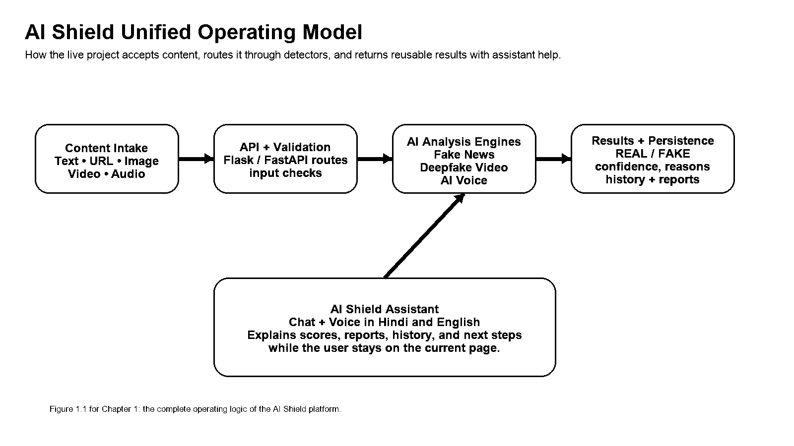
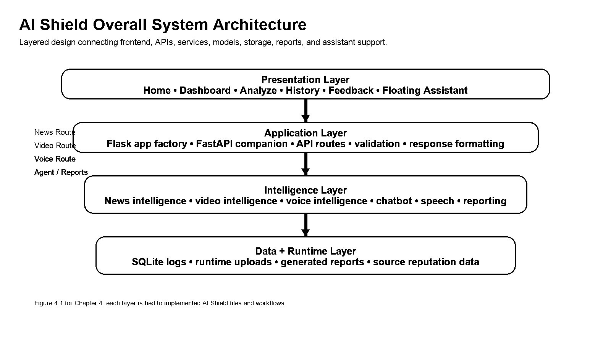
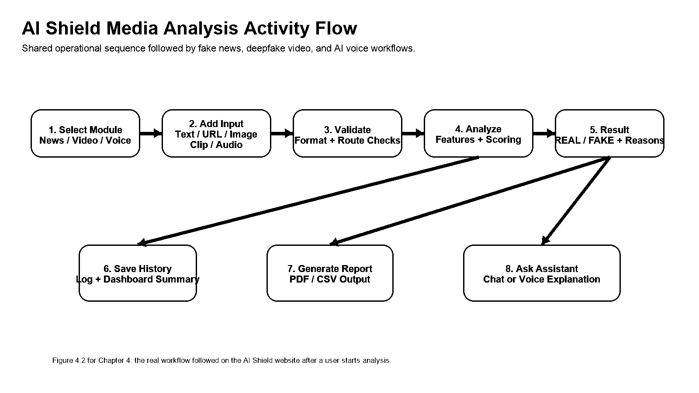
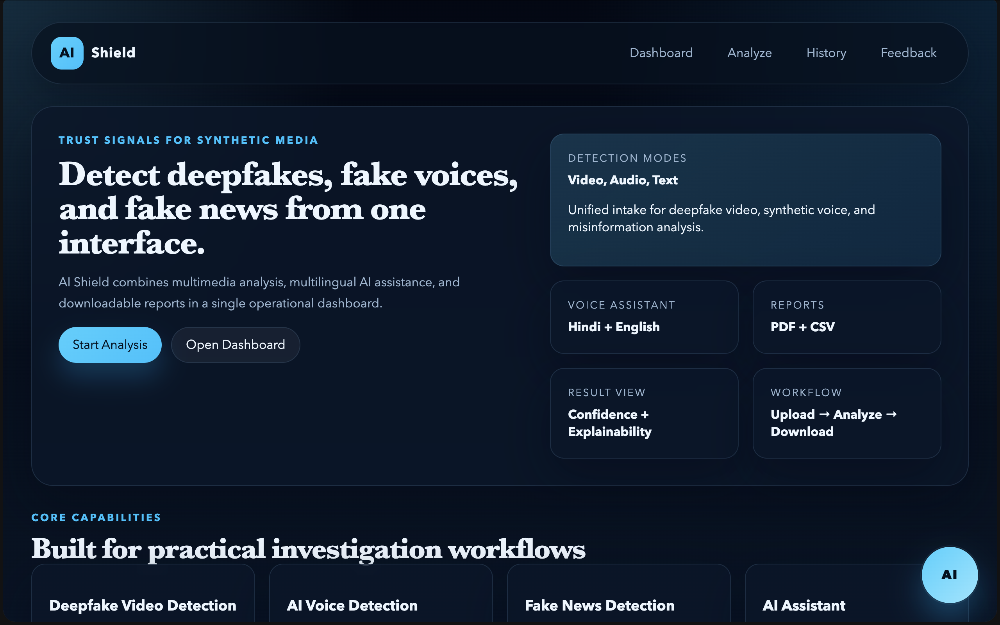
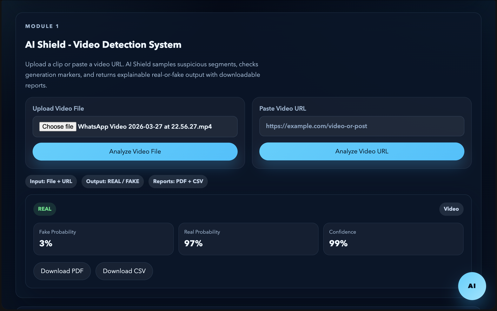
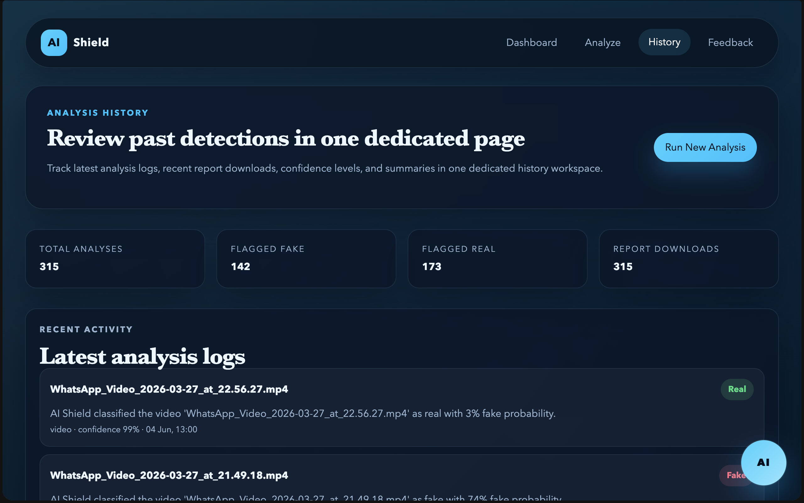
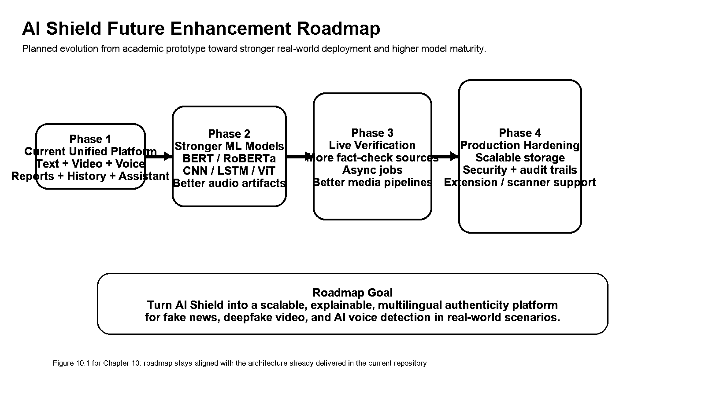
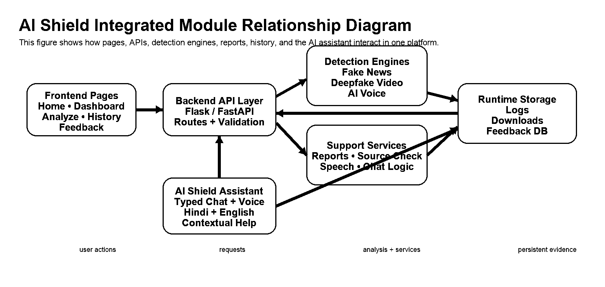
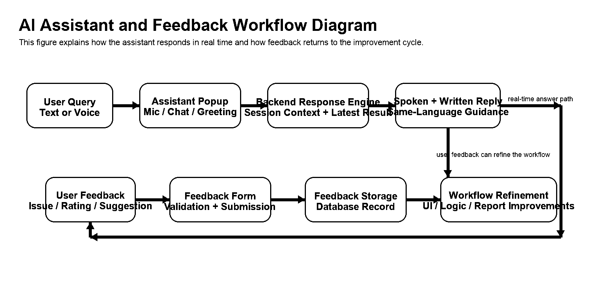
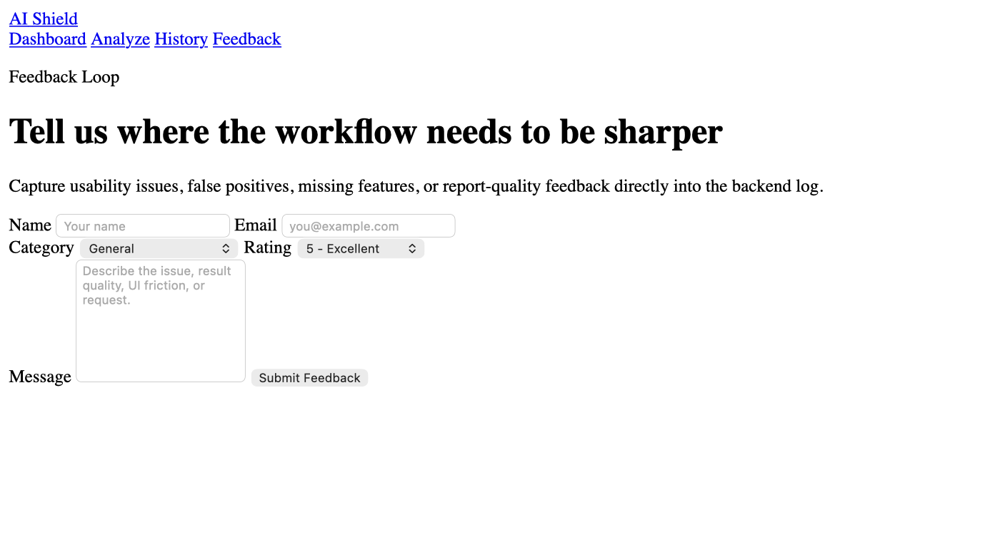

MITTAL INSTITUTE OF TECHNOLOGY, BHOPAL
A Major Project Report submitted in partial fulfillment for the award of degree of
Bachelor of Technology in Computer Science Engineering
Under
Rajiv Gandhi Proudyogiki Vishwavidyalaya
State Technological University of Madhya Pradesh
Session: 2025-2026
Group Name: Tech Titans
Prepared as a complete major-project submission for presentation, review, and future enhancement discussion.
We hereby declare that the project entitled AI Shield is the outcome of our original work carried out under the guidance of Prof. Aarthy Nair in the Department of Computer Science and Engineering, Mittal Institute of Technology, Bhopal.
This updated final report has been prepared specifically for the present AI Shield build available in the project workspace. It reflects the implemented web dashboard, fake news analysis workflow, deepfake video analysis workflow, AI voice detection workflow, history tracking, report generation, and AI Shield Assistant integration.
Wherever published algorithms, datasets, frameworks, open-source references, academic ideas, or platform documentation have been consulted, they have been acknowledged in the references section. The project has not been submitted earlier, either in full or in part, for any other degree or diploma.
This declaration should also be read as a statement of technical responsibility. The submitted report is not merely a narrative description of an idea; it corresponds to a working repository structure, implemented pages, backend services, detector modules, generated reports, and assistant-driven support workflow.
By declaring ownership in this way, the students also accept responsibility for the decisions documented across architecture, implementation, testing, and future enhancement. The declaration therefore protects the academic integrity of both the written report and the accompanying software deliverable.
This expanded statement is important in a project like AI Shield because several modules operate together. Fake news analysis, deepfake video screening, AI voice verification, history tracking, and AI assistant behavior all contribute to one unified system identity rather than to unrelated partial submissions.
The declaration also confirms that the project report, generated PDF, visual figures, and implementation notes are treated as one academic submission rather than separate unrelated artifacts. This is important because AI Shield depends on visible agreement between what the report explains and what the application actually demonstrates.
The students therefore accept responsibility for maintaining consistency between detector behavior, interface flow, database records, report exports, and assistant guidance. Any future update to the software should also update the related documentation so that the submission remains transparent, reviewable, and academically honest.
This is to certify that the project report entitled AI Shield has been prepared by Borase Yashodip Vishwanath and Ayushi Narwariya in partial fulfillment of the requirements for the award of the degree of Bachelor of Technology in Computer Science Engineering.
The work documented here represents the current multi-modal AI Shield implementation. The system integrates fake news verification, deepfake video screening, AI-generated voice detection, downloadable report generation, and an interactive assistant layer.
The report has been reviewed for design quality, module coverage, clarity of architecture, implementation completeness, and suitability for final-year project evaluation.
Certification gains more meaning when the basis of evaluation is stated clearly. In this report, the certificate reflects assessment of software structure, explainability, module integration, documentation quality, demonstration readiness, and the coherence of the end-to-end user workflow.
It therefore certifies more than code compilation alone. The project has been shaped as a complete academic submission in which the report, figures, runtime behavior, history logs, and downloadable artifacts reinforce the same technical narrative.
The certification view includes both technical and presentation readiness. For a project like AI Shield, evaluation is strengthened when the reviewer can inspect the interface, understand the route structure, follow the detection workflow, and connect the final verdict to a documented report artifact.
This page therefore records that the project has been considered as an integrated software solution. The certificate supports the report narrative by recognizing module completeness, explainable output, stable navigation, and the practical ability to demonstrate the system during viva or project assessment.
We express our sincere gratitude to Prof. Aarthy Nair for her constant guidance, technical suggestions, and structured feedback during the development and documentation of AI Shield. Her inputs helped us improve the project from a basic prototype into a well-organized multi-module system.
We also thank Prof. Preeti Mishra and the faculty members of the Computer Science and Engineering Department for providing an environment that encouraged experimentation, testing, documentation, and review.
We appreciate the support of classmates, friends, and evaluators who contributed through interface suggestions, detection-scenario discussions, validation feedback, and presentation advice. Their observations helped strengthen the usability and explanatory quality of the final project.
The acknowledgement section also reflects the collaborative nature of software development. Projects like AI Shield improve not only through coding effort, but through repeated review of interface clarity, detection behavior, report quality, and academic presentation structure.
This is why the support being acknowledged here is diverse. It includes technical guidance, usability feedback, validation discussion, and documentation refinement, all of which shaped the final quality of the report and the working application.
The final form of AI Shield is therefore the product of both implementation effort and continuous review. Recognizing that process strengthens the honesty of the report and better reflects how real software quality is achieved.
The support received during the project also helped convert individual implementation tasks into a coordinated product. Interface suggestions improved how users move between pages, while technical discussion improved how results, reports, and history records are described in the final documentation.
Repeated feedback was especially useful because AI Shield combines several domains. Fake news, deepfake video, and AI voice detection each require different reasoning, but the final system had to present them through one understandable workflow. This collaborative review process helped keep the project practical and presentation-ready.
AI Shield is a unified media-verification platform designed to help users judge whether digital content is authentic or synthetic. The system combines three core analytical domains in one interface: fake news analysis, deepfake video screening, and AI-generated voice detection. Each module produces a real-or-fake classification, confidence-oriented scoring, and human-readable explanations so users can understand why a result was obtained.
The fake news component accepts direct text, article URLs, and claim-linked images. It uses credibility signals, wording cues, cross-verification support, and explanation blocks to assess whether a news item appears reliable. The deepfake video component accepts uploaded files or source URLs and uses frame-aware and stream-aware signals to identify suspicious temporal artifacts, mismatch patterns, and generation markers. The voice component accepts uploaded audio or browser-recorded speech and evaluates breathing style, pitch consistency, pause density, and spectrogram-oriented features to estimate whether the voice resembles a real speaker or an AI voice clone.
The project also includes a dark-theme frontend, a history page, recent downloads, PDF and CSV report generation, and an AI Shield Assistant capable of answering workflow questions in English and Hindi. Flask serves the current interface and API routes, while FastAPI compatibility is maintained for scalable deployment. SQLite stores logs and report metadata, and the architecture remains open for future integration of trained transformer, vision, and audio models.
| S. No. | Section / Topic | Page No. |
|---|---|---|
| 1 | 1. Introduction | 10 |
| 2 | 1.1 Background | 10 |
| 3 | 1.2 Objective | 11 |
| 4 | 1.3 Problem Identification | 11 |
| 5 | 1.4 Proposed Solution | 12 |
| 6 | 1.5 Report Organization | 13 |
| 7 | 2. Software Requirement Specification | 14 |
| 8 | 2.1 Purpose | 14 |
| 9 | 2.2 Scope | 14 |
| 10 | 2.3 Abbreviations | 15 |
| 11 | 2.4 Feasibility Study | 16 |
| 12 | 2.4.1 Technical Feasibility | 16 |
| 13 | 2.4.2 Operational Feasibility | 17 |
| 14 | 2.4.3 Economic Feasibility | 17 |
| 15 | 3. Requirements | 19 |
| 16 | 3.1 Hardware Requirement | 19 |
| 17 | 3.2 Software Requirement | 20 |
| 18 | 3.3 Data Requirement | 21 |
| 19 | 3.4 Functional Requirements | 22 |
| 20 | 3.5 Software Process Model Used | 24 |
| 21 | 4. System Documentation | 26 |
| 22 | 4.1 System Architecture | 26 |
| 23 | 4.2 Use Case Diagram | 28 |
| 24 | 4.3 Activity Diagram | 30 |
| 25 | 4.4 Sequence Diagram | 31 |
| 26 | 4.5 Data Flow Diagram | 32 |
| 27 | 4.6 Database Design | 34 |
| 28 | 4.7 ER Diagram | 35 |
| 29 | 4.8 UML Diagrams | 36 |
| 30 | 5. Technology Stack | 39 |
| 31 | 5.1 Frontend Technologies | 39 |
| 32 | 5.2 Backend Technologies | 40 |
| 33 | 5.3 Machine Learning Technologies | 41 |
| S. No. | Section / Topic | Page No. |
|---|---|---|
| 34 | 5.4 Cyber Security Tools | 42 |
| 35 | 5.5 Database Technologies | 43 |
| 36 | 6. AI Shield Implementation | 45 |
| 37 | 6.1 System Development | 45 |
| 38 | 6.2 Data Collection | 46 |
| 39 | 6.3 Data Preprocessing | 48 |
| 40 | 6.4 Feature Engineering | 51 |
| 41 | 6.5 Model Training | 52 |
| 42 | 6.6 Threat Detection Module | 54 |
| 43 | 6.7 Dashboard Design | 59 |
| 44 | 7. Testing | 61 |
| 45 | 7.1 Testing Strategy | 61 |
| 46 | 7.2 Test Data | 62 |
| 47 | 7.3 Test Cases | 63 |
| 48 | 7.4 Accuracy Analysis | 65 |
| 49 | 7.5 Comparative Results | 66 |
| 50 | 8. User Manual | 69 |
| 51 | 8.1 Introduction and Guidelines | 69 |
| 52 | 8.2 Screen Layouts and Description | 70 |
| 53 | 8.3 Output Reports | 74 |
| 54 | 9. Limitations | 75 |
| 55 | 10. Future Enhancement | 77 |
| 56 | 11. Conclusion | 79 |
| 57 | 12. Final Implementation Summary | 80 |
| 58 | 12.1 Final Submission Review | 80 |
| 59 | 12.2 References | 81 |
| 60 | 13. Repository Appendix | 82 |
| 61 | 13.1 Project Structure | 82 |
| 62 | 13.2 Related Figures and Diagrams | 84 |
| 63 | 13.3 Screenshots | 85 |
| 64 | 13.4 Source Code Appendix (app.py) | 87 |
Only the most necessary figures are included in this revised report. Visuals are used where architecture, workflow, or the user interface is better understood through a figure or diagram than through continuous prose.
This keeps the report academically balanced: the document remains explanation-led, while still using visual evidence in sections where a figure genuinely improves understanding.
| S. No. | Figure No. | Figure Title | Page No. |
|---|---|---|---|
| 1 | Figure 1.1 | Unified AI Shield operating model | 12 |
| 2 | Figure 4.1 | Overall system architecture | 26 |
| 3 | Figure 4.2 | Activity flow for media analysis | 30 |
| 4 | Figure 6.1 | AI Shield home page interface | 59 |
| 5 | Figure 6.2 | AI Shield analyze workspace | 60 |
| 6 | Figure 8.1 | History page with recent analyses and downloads | 72 |
| 7 | Figure 10.1 | Future enhancement roadmap | 78 |
| 8 | Figure 13.1 | Integrated module relationship diagram | 84 |
| 9 | Figure 13.2 | AI assistant and feedback workflow diagram | 84 |
| 10 | Figure 13.3 | Video analysis workspace with floating AI assistant launcher | 85 |
| 11 | Figure 13.4 | AI Shield home page overview | 85 |
| 12 | Figure 13.5 | History page overview | 86 |
| 13 | Figure 13.6 | Feedback page and user response form | 86 |
The figures listed here are intentionally distributed across the report so that each one appears at a moment where prose alone would become less efficient. They serve as visual anchors for understanding architecture, workflow, screen identity, historical review behavior, and the future direction of the project.
A reader preparing for viva can also use this page as a shortcut. By locating the architecture figure, workflow figure, home screen, analyze screen, history page, and roadmap visual quickly, the reader can move between conceptual explanation and interface evidence without scanning the full report again.
This page therefore does more than enumerate image captions. It maps the visual logic of the whole report and helps the reader understand why only a small, purposeful set of figures was retained in the revised version.
Tables are used only where structured comparison is genuinely helpful, such as for requirements, software choices, implementation signals, selected test cases, and final submission inventory.
Where a topic could be explained more naturally in continuous prose, the revised report now prefers full-page writing instead of splitting the discussion into unnecessary tabular blocks.
| S. No. | Table No. | Table Title | Page No. |
|---|---|---|---|
| 1 | Table 1.1 | Misinformation problem landscape and project response | 11 |
| 2 | Table 2.1 | Abbreviation glossary | 15 |
| 3 | Table 2.2 | Technical feasibility matrix | 16 |
| 4 | Table 3.1 | Software requirement stack | 20 |
| 5 | Table 3.2 | Functional requirements catalogue | 22 |
| 6 | Table 4.1 | Layer responsibility matrix | 27 |
| 7 | Table 4.2 | Database schema dictionary | 34 |
| 8 | Table 5.1 | Technology decision matrix | 43 |
| 9 | Table 6.1 | Dataset source overview | 46 |
| 10 | Table 6.2 | Feature engineering summary | 51 |
| 11 | Table 6.3 | Deepfake video signals | 55 |
| 12 | Table 6.4 | AI voice detection signals | 57 |
| 13 | Table 7.1 | Functional test cases part I | 63 |
| 14 | Table 7.2 | Accuracy and confidence observations | 65 |
| 15 | Table 8.1 | Screen description matrix | 70 |
| 16 | Table 8.2 | Report fields and exported artifacts | 74 |
| 17 | Table 9.1 | Current limitations and mitigation paths | 75 |
| 18 | Table 12.1 | Final submission inventory | 80 |
| 19 | Table 13.1 | Project structure and module responsibility map | 83 |
The tables listed here were selected because they condense material that would otherwise require repeated explanation across several pages. Requirements, feasibility, layer responsibilities, schema definitions, technology decisions, detection signals, test cases, and limitation summaries all benefit from structured comparison.
At the same time, not every topic was converted into a table. The revised report intentionally preserves narrative writing for chapters that are better understood through connected discussion rather than through compressed rows.
Using tables in this measured way helps the report stay readable. The reader can rely on structured summaries where necessary while still encountering detailed full-page prose in the surrounding sections.
Digital misinformation has evolved from simple rumor forwarding into a multi-modal problem. A false claim can now be paired with an edited image, a cloned voice, or a convincing deepfake clip, making traditional manual verification much slower and less reliable.
Many existing tools handle only one content type. A user may need one service to check text, another to inspect video, and a separate workflow to judge suspicious voice notes. This fragmentation is a practical problem for students, journalists, investigators, and ordinary users who need fast decisions from one place.
The modern misinformation ecosystem is especially dangerous because these content types now reinforce one another. A misleading post can include written claims, a recycled image, a cloned voice note, and a short manipulated video clip, making the overall narrative appear more trustworthy than any single element would on its own.
AI Shield is motivated by this convergence. The project treats text, visual, and audio misinformation as related evidence streams rather than isolated technical problems, which is why the platform has been designed as a single integrated workspace.
The background of AI Shield is not limited to one detection technique. It reflects a wider need for tools that can organize multiple signals and present them in language that ordinary users can understand. A suspicious item often arrives without clear context, so the system must help the user move from uncertainty to an evidence-based interpretation.
For this reason, the project gives equal attention to workflow, explanation, and record keeping. The value of the platform comes not only from producing a label, but from helping the user understand the reason, preserve the result, and review related activity later.
This background helps the reader understand why the project is designed as a complete platform instead of a single classifier. It connects the social problem of synthetic media with the engineering choices that follow in requirements, architecture, implementation, testing, and user guidance.
The primary objective of AI Shield is to provide an understandable and responsive web system that classifies suspicious content as REAL or FAKE while also explaining the rationale behind the result.
A secondary objective is modularity. Each detector should be replaceable or upgradable without redesigning the full user experience, which allows the present project to work immediately and still remain ready for future trained-model deployment.
The main problem identified for this project is the absence of one easy-to-use academic platform that can simultaneously address fake news, deepfake video, and AI-generated voice scenarios in a presentable way.
Users also struggle with interpretation. Even when a tool provides a confidence score, it may not clarify whether the score arose from an untrusted source, suspicious wording, lack of breathing gaps, or visual inconsistency. AI Shield addresses both detection and explanation.
| Problem Area | Observed Challenge | AI Shield Response |
|---|---|---|
| Fake news | Claims spread faster than manual verification | Text and URL analysis with credibility and corroboration signals |
| Deepfake video | Visual realism makes casual detection difficult | Suspicious segment scoring and explainable video analysis |
| AI voice | Synthetic speech sounds increasingly natural | Breathing, pitch, pause, and spectral indicators |
| Usability | Separate tools create a fragmented workflow | Single interface, one history page, one reporting flow |
The objective and problem-identification discussion becomes stronger when it is connected to actual use conditions. A user rarely arrives with only one kind of suspicious evidence; a misleading message may include a written claim, an attached video, or a forwarded voice note, each requiring a related but different reasoning path.
That is why the table on this page is important. It does not merely list problem categories; it shows how each category motivated a corresponding response inside the delivered system. This connects the problem statement directly to the software that follows.
In academic terms, this page acts as a contract between motivation and implementation. It explains why the later architecture and interface chapters needed to support more than one detector and more than one form of user follow-up.
AI Shield proposes a layered solution in which a frontend dashboard collects user inputs, backend APIs trigger the relevant analysis modules, explanation services summarize why a result was produced, and persistence services store both the analysis log and downloadable report artifacts.
The system is designed around practical workflows: upload or paste content, receive a result, inspect the explanation, download a report, and later review the activity from history. The AI Shield Assistant complements this by translating technical outputs into natural language support.
The solution is intentionally modular. Fake news analysis, deepfake video screening, and AI voice detection can improve independently while preserving the same report structure, storage pipeline, and frontend interaction model. This decision makes the project easier to maintain and more realistic as a foundation for future research.

The proposed-solution figure should also be understood as a continuity diagram. It shows that the same general logic governs every major module: user intake triggers API coordination, detector services return structured signals, and the final result becomes part of a larger reporting and review flow.
This continuity is one of the reasons AI Shield feels unified. Even when the evidence type changes, the software does not change its fundamental promise to the user. The promise remains clear: analyze the content, explain the result, preserve the record, and support later review.
Seen this way, the proposed solution is not only technically modular but also narratively consistent. That consistency becomes especially valuable in demonstration settings where the audience must understand several modules quickly.
This report retains the index structure of the earlier project report while replacing the old content with the full, current AI Shield system. The result is a document that still follows the same chapter numbering expected by the department but now reflects the latest project scope, modules, and workflow.
The chapters move from motivation and requirements into architecture, implementation, testing, user instructions, limitations, future enhancement, and final submission review.
The early chapters establish why the problem matters and what the software must do. The middle chapters explain how AI Shield is actually built and how its modules cooperate. The closing chapters document validation, user workflow, limits of the current build, and the direction of future growth.
This organization is especially useful during academic evaluation because different readers often focus on different concerns. A systems reviewer can move directly to architecture and implementation, while a user-experience reviewer can focus on the user manual, figures, and exported reports.
The report organization section also helps the reader use the document strategically. An architecture-focused evaluator may move directly from Chapters 1 to 4 and 5, while an implementation-oriented reader may prioritize Chapter 6 and the testing chapter before returning to the introduction and limitations.
The chapter design therefore supports more than one reading style. It works for full sequential reading, for viva preparation, and for selective technical inspection depending on the reviewer’s interests.
This structure is especially valuable because AI Shield combines software engineering, multimedia analysis, explainable AI, and documentation workflow in one project. The reader benefits from a clear map before entering that breadth.
The purpose of this Software Requirement Specification is to define the scope and expected behavior of AI Shield so that reviewers, developers, and future contributors understand what the system does and how its modules interact.
The SRS also acts as a bridge between academic documentation and software delivery by converting project ideas into functional modules, interfaces, and validation expectations.
AI Shield supports raw text, article URLs, claim-linked images, uploaded videos, video URLs, uploaded audio, and short browser-recorded voice samples. It generates results, explanations, reports, and history entries inside the same project.
The current report documents the already-built modules as well as the intended design path for stronger production deployment.
The scope includes not only detection, but also explanation, persistence, and presentation readiness. In practical terms, this means the system must do more than produce a label. It must also show interpretable reasons, store logs for later review, and generate formal outputs that can be shared or evaluated.
The principal stakeholder groups include end users who need quick authenticity guidance, reviewers who need a clear technical structure, and future developers who may extend the current modules with stronger machine learning models. At the same time, some concerns remain outside the present scope, such as enterprise user management, high-volume distributed inference, and fully benchmark-certified production deployment.
The scope of AI Shield is intentionally broad enough to feel meaningful, but narrow enough to remain defensible within a final-year major project. The system focuses on authenticity analysis, explanation, storage, and presentation workflow rather than on enterprise-scale account management or distributed production infrastructure.
This keeps the software aligned with its most important academic objective: to demonstrate a unified and explainable detection platform across multiple forms of suspicious content.
Because AI Shield spans web development, media analysis, and machine learning, a consistent abbreviation glossary is useful for both technical readers and academic reviewers.
| Term | Expanded Form | Use in AI Shield |
|---|---|---|
| API | Application Programming Interface | Connects frontend events to backend analysis routes |
| NLP | Natural Language Processing | Used in fake news analysis |
| MFCC | Mel Frequency Cepstral Coefficients | Key audio feature for voice analysis |
| OCR | Optical Character Recognition | Optional text extraction from image-based claims |
| CSV | Comma-Separated Values | Used for reports and sample manifests |
| DFDC | DeepFake Detection Challenge | Reference video dataset family |
| ASVspoof | Automatic Speaker Verification Spoofing | Reference audio deepfake dataset family |
| UML | Unified Modeling Language | Used for package, sequence, and interaction views |
| TTS | Text to Speech | Used by the AI assistant for spoken replies |
| STT | Speech to Text | Used for browser voice input to the assistant |
The glossary is especially helpful in AI Shield because the project brings together web engineering, multimedia analysis, reporting, and conversational assistance in one system. Without a shared vocabulary, reviewers may understand the interface but still misread the implementation decisions described in later chapters.
For that reason, the abbreviations above are not treated as isolated textbook terms. They are connected directly to visible modules such as the dashboard, history page, report generator, speech assistant, and the three core authenticity analyzers.
The abbreviations listed on this page are reused repeatedly because AI Shield is intentionally interdisciplinary. A single demonstration may move from frontend behavior to backend routes, then to audio features, dataset discussion, and report export without changing the underlying project identity.
When the reviewer encounters these terms later in the report, the goal is that they feel like familiar working labels rather than isolated academic vocabulary.
AI Shield is technically feasible because its current architecture uses common technologies that are already stable in academic environments: HTML/CSS/JavaScript on the frontend and Python-based APIs on the backend.
The system also remains extensible. Detector modules can operate immediately using heuristic or lightweight pipelines and later accept trained artifacts such as BERT, CNN, LSTM, or transformer-based models without requiring a full redesign.
Technical feasibility is strengthened by the fact that the repository already contains separate frontend pages, backend entry points, services, route modules, runtime directories, and report logic. The project therefore has a concrete software foundation rather than only a theoretical design.
| Feasibility Driver | Current Status | Evidence in Project |
|---|---|---|
| Backend framework | Ready | Flask app factory and FastAPI companion entry point |
| Media workflows | Ready | Text, video, and voice routes already exist |
| Storage | Ready | SQLite runtime database and report directories |
| Upgrade path | Ready | Model files and voice module artifacts are replaceable |
Technical feasibility also depends on how well the project separates immediate functionality from future ambition. AI Shield succeeds here because it can run today with current modules while still documenting a clean path toward stronger trained-model integration later.
In other words, feasibility is not only about whether the code executes, but whether the design can absorb improvement without collapsing into a rewrite.
Technical feasibility in AI Shield also depends on maintainability. A project may run once and still be difficult to defend if its structure is tangled or its responsibilities are unclear. The present implementation avoids that risk by keeping detectors, routes, storage, and UI concerns separated.
This separation means that stronger future models can be integrated into the same workflow without forcing the team to rebuild the surrounding report, history, or assistant layers.
Operationally, AI Shield is feasible because the interaction model is simple: users choose a module, submit input, receive a verdict, and inspect the explanation. This makes the project practical for classroom demonstrations, peer testing, and non-expert use.
The history page and report downloads also make the system operationally stronger than a single-use prototype because previous analyses can be reviewed and reused.
The project keeps economic cost low by relying on open-source technologies, local storage, and lightweight deployment options. This is appropriate for an academic build and reduces infrastructure dependence.
Even where advanced model integration is planned, the present design delays heavy cost until stronger deployment needs arise.
Operationally, the system is realistic because it uses a familiar browser workflow and short task path: choose a module, provide input, review the result, and optionally download a report. Economically, it is realistic because its main dependencies are open-source and its default runtime does not require paid cloud infrastructure.
This combined feasibility view makes AI Shield suitable for final-year project evaluation. It is complex enough to be technically meaningful, yet practical enough to run within a normal student development environment.
Taken together, the technical, operational, and economic perspectives support a strong overall feasibility conclusion. The project is realistic for the current educational environment and ambitious enough to justify future research-oriented improvement.
This balance is important because a final-year project must be both deliverable and expandable. AI Shield meets that expectation by functioning now while preserving a credible development horizon.
The final step in the SRS is to ensure that the identified needs can be traced to concrete system behavior. AI Shield addresses this by maintaining strong alignment between the requirement statements, the page-level user workflow, the backend routes, and the persisted outputs.
Because the project now includes fake news, deepfake video, AI voice, reports, and the assistant, the acceptance summary must confirm not only core detection but also explainability, history persistence, and presentation readiness.
A major strength of the current build is that these expectations can be demonstrated directly. Reviewers can observe analysis forms, result cards, stored history entries, generated reports, and contextual assistant answers without needing to rely on hypothetical screens or unimplemented promises.
The SRS therefore closes with a practical conclusion: the present AI Shield release satisfies the academic prototype objective and also offers a well-structured path toward stronger production-grade models in later work.
Acceptance in AI Shield should be read as workflow acceptance rather than only detector acceptance. A module is not truly accepted unless its result can be explained, preserved, and exported in a way that remains useful after the initial analysis.
This perspective strengthens the final submission because it aligns the report with the actual behavior expected during evaluation.
Acceptance criteria for AI Shield are meaningful only when they are connected to user-visible behavior. A successful build should allow the user to submit evidence, receive a result, read an explanation, download supporting material, and return to previous analyses without confusion.
The project is therefore evaluated through both backend response quality and interface continuity. Even a technically correct detector would feel incomplete if the result were not saved, explained, or accessible through the report workflow.
For final assessment, these acceptance expectations give the reviewer a checklist for the live demonstration. If the platform can analyze input, explain the verdict, store the event, and make the output reusable, then the project satisfies the practical goals stated in the SRS.
AI Shield can run on a standard development laptop or desktop because the current build emphasizes modular heuristics, concise media sampling, and light report generation. More powerful GPUs are beneficial for future trained-model deployment but are not mandatory for demonstrating the present codebase.
Because the project includes file upload, report generation, and optional microphone recording, storage and browser capability are more important than raw compute for the current academic release.
A normal development laptop is sufficient for coding, route testing, and PDF generation. A somewhat stronger machine improves comfort during repeated media uploads, figure capture, and history-report verification. Dedicated GPU hardware becomes relevant only when future versions incorporate heavier trained video or audio models.
From an implementation perspective, the most important hardware requirement in the current AI Shield build is stability rather than raw acceleration. The project must support browser rendering, file upload, route execution, figure capture, and report generation in a reliable way during repeated demonstrations.
This means memory availability, storage health, and microphone support can be just as important as processor speed. Even when future deepfake or audio models become heavier, the current academic version remains intentionally accessible on a normal student machine.
The hardware requirement remains intentionally realistic for a final-year project environment. AI Shield should be demonstrable on a normal laptop because the present build focuses on integration, explainability, and workflow validation rather than heavy production-scale inference.
This makes the project easier to reproduce during review. A reviewer can inspect pages, run backend routes, test reports, and evaluate history behavior without needing specialized laboratory equipment.
This hardware approach is also helpful during viva because the project can be shown without depending on rare infrastructure. The focus remains on system design, workflow clarity, and integration quality, while future high-compute model training remains documented as an enhancement path.
The current AI Shield repository uses Python for backend logic and static web technologies for frontend delivery. The software requirement layer is intentionally practical: it focuses on tools that are easy to install in student environments and stable enough for project demonstrations.
A dual-entry backend approach is retained. Flask powers the present UI and routing, while FastAPI is included for scalable API exposure and future deployment evolution.
| Software Component | Version / Type | Role |
|---|---|---|
| Python | 3.10+ recommended | Runtime for backend, utilities, and report scripts |
| Flask | Web framework | Existing app delivery and route registration |
| FastAPI | API framework | Low-latency structured deployment path |
| HTML/CSS/JavaScript | Frontend stack | Dashboard, forms, and result visualization |
| SQLite | Embedded database | Analysis logs, feedback, report metadata |
| Google Chrome | Rendering utility | PDF generation from report source HTML |
The software requirement stack is intentionally conservative because reliability during demonstration is more important than novelty in tooling. Each selected component supports a clear project need: Python for backend logic, Flask for current app delivery, FastAPI for scalable API evolution, SQLite for embedded persistence, and standard web technologies for transparent frontend control.
This selection also reduces setup friction for reviewers or future contributors. A project that can be inspected and executed without a complicated dependency story is easier to validate academically and easier to maintain after submission.
The selected software stack supports a balance between simplicity and extensibility. HTML, CSS, and JavaScript keep the interface inspectable, while Flask and FastAPI-style route organization make backend behavior easier to understand during evaluation.
SQLite is suitable for the current academic release because it stores history and report metadata without requiring a complex external database server. The same storage concept can later migrate to PostgreSQL or cloud storage if the project moves toward deployment.
The software environment also supports maintainability. Because each major responsibility is placed in a recognizable layer, future contributors can improve the frontend, backend, database, or detector logic without rewriting the complete project from the beginning.
The system draws on multiple kinds of data because each modality needs different evidence. Fake news analysis requires labeled claims and source reputation data; deepfake video requires manipulated and real clips; voice analysis requires real and synthetic speech samples; and reporting requires structured runtime metadata.
The current repository includes sample datasets and manifest references, while the architecture remains ready for larger public datasets such as LIAR, DFDC, FaceForensics++, ASVspoof, and Fake-or-Real.
This requirement has both a training dimension and an operational dimension. The training dimension concerns benchmark-style corpora that improve model behavior over time, while the operational dimension concerns runtime inputs, uploaded files, generated metadata, and stored reports produced during actual use.
The data requirement is therefore broader than a single CSV file or media folder. AI Shield depends on curated sources for future model growth, structured reputation data for credibility reasoning, and runtime records that preserve the evidence trail shown in the dashboard and history page.
The data requirement is also closely related to explainability. It is not enough to classify a claim or clip; the system should preserve enough supporting context to justify why a verdict was produced and what evidence stream influenced it.
For this reason, AI Shield treats runtime records, source-reputation data, and downloadable report metadata as first-class information assets alongside benchmark datasets.
This broader view of data helps the project remain credible during demonstration. When a result is challenged, the system can point to stored context, source reasoning, or generated metadata instead of relying only on a single screen label.
Functional requirements define what the system must actually do for the user. Because AI Shield is multi-modal, the requirements cover input acceptance, result generation, explanation, storage, and guidance.
The catalogue below emphasizes behavior that is visible in the frontend or directly supported by backend routes.
| ID | Functional Requirement | Delivered In |
|---|---|---|
| FR-01 | Accept text claims and article body input | News analysis form |
| FR-02 | Accept news article URLs | News URL route |
| FR-03 | Accept image input linked to claims | News image route |
| FR-04 | Accept uploaded video files and video URLs | Video module |
| FR-05 | Accept uploaded audio and browser microphone input | Voice module |
| FR-06 | Return REAL / FAKE prediction with confidence orientation | All detector result cards |
| FR-07 | Explain why the prediction was produced | Explanation blocks and assistant |
| FR-08 | Generate PDF and CSV reports | Report service |
The functional requirement list should also be understood as a promise of end-to-end continuity. A valid feature in AI Shield is not complete merely because an upload control exists; it is complete only when the system can accept the content, analyze it, explain the result, and preserve the outcome for later review.
This interpretation is useful because it links the requirement table directly to visible user experience. Each row corresponds not only to backend capability but also to a meaningful workflow the evaluator can observe during demonstration.
Each functional requirement should also be read in relation to the next one. Input acceptance leads naturally to scoring, scoring leads to explanation, explanation leads to reporting, and reporting leads to later review through history or assistant support.
This continuity is one of the reasons the project feels complete from a user perspective rather than fragmented into unrelated feature cards.
The functional catalogue continues with persistence, assistant support, and interface quality expectations that directly affect end-user trust.
Although the original index does not separate non-functional requirements as an independent heading, the present report documents them here because the project's usability depends strongly on responsiveness, readability, and repeatability.
These supporting expectations include stable UI behavior, reliable export generation, readable visual hierarchy, and modular backend organization. Together they ensure that the system remains practical during a live demonstration and understandable during later review.
The supporting expectations on this page play a major role in whether the project feels dependable during real use. A detector that returns a label but fails to preserve history, report output, or readable interface behavior may still be technically interesting, but it will not feel trustworthy to the user.
That is why stability, readability, error visibility, and assistant usefulness are described here as quality-oriented requirements rather than afterthoughts. They shape how confidently the platform can be demonstrated.
These expectations also influence evaluation quality. When a reviewer uses the platform, the confidence they feel comes not only from the detector label but from the clarity of the surrounding workflow.
In this sense, usability, transparency, and stable fallback behavior should be treated as part of the project’s functional trustworthiness rather than as merely cosmetic refinements.
Quality expectations matter here because users often decide whether they trust a tool before they examine the detector logic in detail. Readable output, visible errors, and consistent navigation create the conditions under which the technical result can actually be taken seriously.
That is why these requirements belong inside the formal software requirements chapter and not only inside later implementation notes.
The development process followed an incremental and iterative model. Instead of attempting full intelligence in one step, the project first established the interface, then added individual media modules, then added persistence, and finally improved the assistant and reporting workflow.
This model fit the project well because UI learning, detector behavior, and presentation quality all evolved together through repeated feedback.
The earliest iteration was devoted to visual identity and navigation. Later iterations added the three main detection modules, report generation, history persistence, and finally assistant refinement. This stepwise approach allowed the system to remain stable while requirements continued to expand.
The software process model is particularly appropriate for AI Shield because requirements did not remain static. As the project matured, the team refined the history workflow, improved voice behavior, adjusted theme consistency, regenerated reports, and expanded detector explanations based on repeated review.
An incremental process made these changes manageable because each revision could be isolated, tested, and absorbed without destabilizing the full application.
The iterative process also improved report quality itself. As the software matured, the documentation could become more precise because it was describing a stabilizing system rather than a moving prototype with unclear boundaries.
This feedback loop between building and documenting is one of the most valuable hidden outcomes of the chosen process model.
A milestone-driven process was useful because the project constantly balanced two goals: making the software work and making the final presentation readable and convincing. The schedule therefore mixes engineering tasks with documentation and evaluation support work.
The final report itself reflects these milestones. The implementation chapter captures the technical build-out, while later chapters preserve the testing, refinement, and documentation outcomes that transformed the project into a polished submission.
This development strategy was effective because every new feature was checked against the overall user journey. No module was treated as complete until it also made sense in the dashboard, in history, in downloadable reports, and in the explanatory assistant layer.
A milestone-driven process also improved communication inside the team. Frontend decisions, backend detector work, documentation updates, and report refinements could be grouped into visible stages instead of being handled as unrelated tasks.
This pattern proved especially useful because user feedback changed the project repeatedly. History placement, assistant behavior, report quality, and theme adjustments all benefited from a process model that allowed revision without destabilizing the full codebase.
The process model also made responsibility clearer. Each iteration could be evaluated in terms of what improved technically, what improved in the interface, and what improved in the final report quality.
The milestone plan is useful because AI Shield was not built as one isolated page. It required several connected stages: interface preparation, backend route creation, detector integration, report export, history storage, and final documentation.
Each milestone reduced uncertainty in a different part of the project. Early interface milestones proved that users could navigate the platform, backend milestones proved that requests could be processed, and reporting milestones proved that results could become durable artifacts.
These milestones also make the project easier to defend academically. They show that AI Shield progressed through planned integration steps and that the final report is based on an evolving implementation rather than only a conceptual design.
AI Shield uses a layered architecture that separates the user interface from route handling, model logic, storage, and reporting. This improves maintainability and makes it possible to strengthen one detector without breaking the rest of the application.
The architecture is also presentation-friendly: every user-facing action can be traced to a route, a processing module, a persistence action, and a visible output.

The architecture figure should be read from top to bottom as a control path and from bottom to top as an evidence path. User actions begin at the browser layer, travel through routes and services toward detector logic and storage, and then return upward as visible results, summaries, or reports.
This layered reading is one of the reasons AI Shield is easy to explain. Every result on the screen can be traced back to a service decision, model or heuristic signal, and finally to stored runtime context.
The architecture layer model is also useful because it separates what the user sees from what the system reasons about internally. This helps the report explain why one visual action, such as clicking an analysis button, can trigger several backend responsibilities without confusing the user-facing flow.
In a real-world deployment context, this same separation would also make auditing, scaling, and role assignment much easier.
The architecture becomes more meaningful when each layer's responsibility is explicitly assigned. This responsibility matrix is helpful during review because it shows that the same project can remain understandable even as more modules are added.
AI Shield follows the principle that input validation, analysis logic, and storage should remain clearly separated.
| Layer | Primary Responsibility | Representative Files |
|---|---|---|
| Frontend | Collect input and render results | frontend/index.html, upload.html, history.html |
| Frontend JS | Form submission, state refresh, speech support | script.js, ai_agent.js, voice_agent.js |
| Routes | Receive API requests and call the correct module | news_routes.py, video_routes.py, voice_routes.py |
| Models / Services | Feature extraction, scoring, explanation, report generation | models/*, services/* |
| Persistence | Store logs, reports, and feedback | database/*, backend/runtime/database |
The layer responsibility matrix becomes more valuable when it is read as a maintainability map. Each layer owns a distinct kind of work, and that ownership reduces the chance that future changes will scatter across unrelated files. This is important because AI Shield already combines interface behavior, detector logic, persistence, and documentation support in one repository.
By assigning clear responsibility boundaries, the project can continue evolving without becoming fragile. New features can be attached to the correct layer instead of being patched wherever temporary space appears.
The main actors in AI Shield are the user, the AI Shield Assistant, and the backend services. The user can submit media, review results, download reports, revisit history, and ask for explanations. The assistant can clarify scores and provide guidance, but it does not replace the analysis modules themselves.
This use case framing is helpful because it separates verification actions from guidance actions.
From the user's point of view, the core use cases are straightforward: provide suspicious content, receive a result, understand the explanation, and preserve the outcome as a report or history entry. From the system's point of view, the corresponding responsibilities include validation, detector selection, scoring, explanation building, and persistence.
This separation also helps during testing because each user action can be mapped to a backend process and an observable screen outcome.
Another useful way to read the use case view is as a promise of consistency. Regardless of whether the input is text, video, or audio, the user expects the same broad qualities from the system: clear intake, understandable results, preserved history, and report support.
The assistant exists within the same use case space as a support actor. It reduces friction for non-expert users by translating technical output into a more accessible conversational form without replacing the authenticity modules themselves.
The use case view translates technical modules into user goals. Users are not expected to think in terms of route handlers, model signals, or database tables; they think in terms of uploading content, checking authenticity, reading a result, and saving evidence.
By documenting use cases, the report shows how each actor interacts with the platform. The user initiates analysis and reviews outputs, while the system coordinates validation, detection, persistence, and report generation in the background.
The use case also separates visible user actions from internal system responsibilities. This makes the diagram valuable during explanation because the presenter can show what the user sees and what the backend silently coordinates after each request.
Beyond the abstract use case picture, the system can be described through concise narrative statements. These clarify what each actor expects from the platform and what response the platform must provide.
Such narratives are useful in testing because each can later be mapped to one or more concrete test cases.
For example, when a user submits a news claim, the expected response is not merely a label but also a readable explanation, stored history, and report availability. When the same user uploads a voice sample, the expectations shift toward clear authenticity cues, natural-language reasoning, and quick feedback suitable for live demonstration.
The assistant introduces another important narrative path. It does not create detector results on its own, but it helps users interpret them, understand missing browser permissions, and learn where to find history and downloaded reports.
Narrative use cases are valuable because they translate formal requirements into simple stories that can be demonstrated. In AI Shield, those stories usually begin with a suspicious input and end with an interpretable output that can be stored, exported, or discussed with the assistant.
This storytelling angle is helpful during viva because it allows the evaluator to understand system behavior from a user’s point of view rather than only from a diagrammatic one.
The activity flow is deliberately similar across all modules so that users do not need to learn a different process for every type of content. This consistency also makes the frontend easier to maintain.
Validation occurs early so unsupported files or empty inputs fail before expensive processing is attempted.

The activity diagram is important because it captures the rhythm shared by all major detectors. Regardless of whether the user submits text, video, or audio, the system follows a similar discipline: validate first, derive signals next, score carefully, generate a readable explanation, then preserve the completed event.
This consistency helps the interface remain learnable. Once a user understands one module, the remaining modules feel familiar rather than entirely new.
Because the activity flow is shared across modules, a presenter can demonstrate several media types without having to re-teach the interface each time. That consistency is a practical advantage during review because it allows evaluators to focus on the authenticity logic rather than on navigation confusion.
The activity diagram therefore supports both usability and maintainability at the same time.
The activity flow clarifies the decision path inside the application. The user action begins the process, but the system must validate the input, choose the correct analysis path, generate a readable verdict, store the event, and make the output available for later review.
This step-by-step structure prevents the project from appearing like a simple upload form. It shows that AI Shield behaves as a workflow system with a beginning, processing stage, result stage, and follow-up stage.
Reliability in this flow comes from repeating the same basic pattern across modules. When text, video, and voice inputs follow a consistent route from validation to result storage, the platform becomes easier to test, maintain, and explain.
The sequence view clarifies how a user request travels from the browser to the relevant module and returns as an actionable result. This is particularly important in AI projects because a response often combines model logic, reporting, and persistence.
In AI Shield, the route layer coordinates the transaction while services and models remain focused on analysis.
A typical sequence begins when the browser sends a request to a dedicated `/api/*` route. The route validates the input, invokes the correct detector or service, receives a structured result, stores the analysis record, and then returns the response payload to the interface.
This sequence is intentionally uniform across modules because that uniformity simplifies frontend handling, report generation, and testing.
In practice, the sequence model also explains why debugging AI Shield became manageable. When a problem appeared, the team could ask whether it originated at input validation, route dispatch, detector logic, persistence, or result rendering. That separation reduced the risk of ambiguous failures.
The same logic helps evaluators understand the backend architecture. A well-defined sequence means each step can be tested and defended independently while still belonging to a single end-to-end workflow.
Another advantage of the sequence perspective is that it clarifies ownership. The browser initiates action, routes govern structure, detectors analyze evidence, and storage preserves the result. Because these roles are explicit, later maintenance remains simpler.
This also improves teaching value. The report can show evaluators not only what happens, but why each stage exists and how it contributes to a clean end-to-end interaction.
The sequence discussion also clarifies accountability inside the codebase. If a result appears wrong, the team can ask whether the issue came from validation, orchestration, feature extraction, storage, or rendering rather than treating the backend as one undifferentiated block.
This kind of reasoning is exactly what makes debugging and future extension more predictable.
The Data Flow Diagram (Level 0) treats AI Shield as a verification engine that receives media, transforms it into signals, stores the result, and returns structured output. This simple view is useful for understanding the system before focusing on implementation details.
All supported inputs eventually produce two persistent side effects: an analysis log and a report record.
The data flow can therefore be summarized as movement from user-provided evidence into structured features, from features into a verdict, and from the verdict into long-lived storage objects that remain accessible from the dashboard and history screens.
This data-flow perspective is also useful for security and traceability. By understanding how information moves through the system, the team can better justify where uploads should be stored, where logs should be written, and how report files should be linked back to specific analyses.
The diagram chapter therefore contributes not only to academic completeness but also to practical maintainability. It clarifies why the history page, dashboard counters, and report downloads all depend on the same underlying event flow.
This means data-flow documentation is not just decorative. It directly supports system trustworthiness because it shows where evidence goes and how it remains available after analysis.
The data-flow page also strengthens the report because it explains the project from an information-movement perspective rather than only from a code perspective. Reviewers can see that every detector ultimately participates in the same broader pattern: intake, transformation, scoring, storage, and output delivery.
This matters because AI Shield is not only an algorithmic exercise. It is a working software system, and software systems are often understood best when the journey of data is made explicit.
A more concrete data-flow interpretation maps each process to a storage action and a user-visible result. This is useful when reasoning about history generation and report traceability.
Instead of treating the detectors as isolated endpoints, AI Shield treats each analysis as a transaction that begins with input validation and ends with both a user-visible explanation and a persistent record.
A news analysis updates the log, may generate one or more reports, and changes what the dashboard summary displays. A video or voice analysis follows the same broad path, which is why the history page can present all modules together without confusing the reviewer.
This shared data-flow design is one of the strongest reasons the project feels cohesive. The same persistence approach supports statistics, recent activity, report traceability, and assistant context.
This page also highlights why persistence is so central to AI Shield. A finished analysis affects more than one screen: it influences dashboard counters, appears in the history page, may generate report metadata, and can become part of the assistant’s contextual explanation.
Because the same event is reused in several places, the underlying data-flow discipline must remain consistent. That consistency is one of the strongest indicators that the system is engineered as a platform rather than a collection of disconnected demos.
A single persisted analysis in AI Shield influences more than one destination. It can appear in dashboard counts, in history review, in recent downloads, and in assistant conversation. This multi-surface reuse is why careful data movement is not merely a backend concern but a project-wide design principle.
AI Shield uses SQLite as the primary embedded store for analysis logs, report metadata, and feedback. This is sufficient for the present academic scope and keeps deployment simple, especially when the app is demonstrated on a single machine.
The schema focuses on traceability: every analysis entry stores what was analyzed, which module handled it, what status was returned, and which report artifacts were generated.
| Entity / Table | Key Fields | Purpose |
|---|---|---|
| analysis_logs | analysis_type, input_name, status, confidence, metadata_json, created_at | Stores every completed analysis |
| report_metadata | report_id, analysis_id, pdf_path, csv_path, created_at | Connects an analysis to downloadable reports |
| feedback | name, category, rating, message, created_at | Stores user response to the system |
| runtime uploads | stored as files | Persists uploaded media where needed for reports or re-checking |
The database design is important not because the current storage is large, but because it is traceable. Each completed analysis should leave behind enough structure that the system can later explain what happened, when it happened, and which downloadable artifacts were generated from that event.
This traceability is one of the reasons the project feels like a platform rather than a temporary script. The schema supports memory, reproducibility, and evidence continuity across the dashboard, history page, assistant context, and reports.
The database design supports traceability rather than only storage. Each saved record helps connect a user action to a detector result, report artifact, timestamp, and later history view. This makes the system stronger during review because completed analyses do not disappear after one page refresh.
Keeping the schema simple is also an advantage in the present version. The reviewer can understand the purpose of each table quickly, while the project still demonstrates persistence, retrieval, metadata organization, and report support.
This storage design also supports accountability. When a generated report or history entry can be traced back to a recorded analysis event, the system becomes more trustworthy for project review and later debugging.
The ER view highlights that reports and feedback revolve around analysis events. This is appropriate because AI Shield is analysis-centric: every meaningful interaction either creates or refers to an analysis record.
Optional MongoDB persistence can mirror or extend this design for larger deployment scenarios, but the logical relationship remains the same.
The analysis log is the anchor entity because every result, report, or feedback context originates from an analysis event. Reports are attached to those events, while feedback captures the human experience around them. Uploaded files support the process operationally and may also be referenced by generated outputs.
The ER interpretation is valuable because it makes the persistence strategy easy to explain during review. Instead of imagining disconnected files, a reviewer can understand the project as a system of related records centered around analyses.
This also supports feature growth. Once the analysis entity is treated as the anchor, additional records such as report versions, reviewer notes, or future collaboration metadata can be added in a disciplined way.
The ER view therefore has long-term significance. It shows that the current database decisions are not only sufficient for the present build but also sensible for future enhancement.
The entity relationship perspective makes the project easier to defend because it shows that records are organized around meaningful system events rather than around arbitrary storage fragments. This improves clarity when discussing how analyses, reports, downloads, and user responses remain connected.
It also shows that the persistence layer was designed intentionally. Even in an academic deployment, a clear relationship model prevents later confusion when more than one feature needs access to the same event history.
The UML package view is especially useful in this project because the codebase is intentionally decomposed into routes, services, utilities, models, databases, and runtime outputs. This decomposition is one of the strongest structural features of the current AI Shield implementation.
A reviewer can map these packages directly to the repository structure, which improves confidence that the documented architecture matches the delivered project.
In practical terms, the package view communicates responsibility boundaries. Frontend scripts manage interaction, routes manage request flow, services handle orchestration, models hold detector behavior, and database utilities preserve long-lived records.
Although the present report explains the UML views in prose, the underlying intention remains the same: to show that every major code area has a clear responsibility boundary. This is one of the most important signs of a serious software project.
The package interpretation also makes future maintenance safer. New contributors can reason about where to place a model upgrade, where to add a report helper, and where to refine a user interaction without scattering logic across unrelated folders.
In that sense, the UML discussion strengthens both review readability and engineering continuity. It translates code organization into a design language that evaluators can inspect systematically.
The UML discussion is strongest when it is tied back to the repository itself. In AI Shield, the folders for routes, models, services, utilities, database helpers, and frontend assets map cleanly to the responsibilities described in this chapter.
That alignment matters because it proves the report is not theoretical decoration. The diagrams describe the actual delivered system structure, which increases confidence in the submission.
A deployment-oriented UML perspective shows how the browser, backend runtime, uploads directory, report directory, and database cooperate in the running system. Even though the current deployment can be local, the topology is already compatible with later expansion.
The same topology also supports easier explanation during viva because it shows where files, logs, and downloadable outputs actually live.
This deployment view is simple but useful. It demonstrates that AI Shield is not dependent on a complicated distributed environment in its present form. At the same time, it leaves open the possibility of replacing local storage with managed services when scaling becomes necessary.
A simple deployment model is particularly appropriate for a major project because it keeps the system reproducible. The same local workspace can host the frontend, backend runtime, reports, and generated figures without requiring a complex external environment.
At the same time, documenting this simpler deployment does not weaken the report. Instead, it shows that the current build is honest about what is delivered while remaining architecturally open to future scaling.
The deployment page also explains why AI Shield remains practical for local demonstration while still feeling expandable. Browser pages, backend services, uploads, logs, and generated reports cooperate in a predictable way even without a complex remote environment.
This is important because academic reviewers often value systems that can be demonstrated reliably. A simpler but well-documented deployment path is more useful than an impressive but unstable one.
The system documentation section concludes by mapping technical packages back to responsibility. This improves maintainability because it is clear where future enhancements should be implemented.
For example, replacing fake news scoring with a trained transformer should affect the model or service layer more than the frontend or reporting layer.
This responsibility mapping also explains why the current project remains modifiable. The user interface can evolve without rewriting the detectors, and model upgrades can happen without forcing a complete redesign of the dashboard or history workflow.
Responsibility mapping also improves the academic defensibility of the project. When a reviewer asks where a bug was fixed or where a future model should be integrated, the answer can be grounded in the documented package structure rather than given informally.
This reinforces the idea that AI Shield is not merely functional but also maintainable. Good maintainability is often the difference between a working demo and a project that can continue evolving after submission.
The report benefits from this clarity as well. Because responsibilities are mapped cleanly, later chapters on implementation, testing, and future enhancement can refer back to a stable architectural logic.
Responsibility mapping is also a maintenance aid. When a future contributor wants to refine voice analysis, adjust report formatting, or improve the assistant, the report makes it clear which package family should own that change.
This reduces the risk of code drift. Features evolve more safely when the project already documents where each kind of logic belongs.
The frontend is implemented using static HTML, CSS, and JavaScript. This choice kept the project lightweight while still supporting a modern dark-blue interface, multiple pages, history cards, and a floating voice-enabled assistant.
Because the frontend is served by Flask, it remains easy to test locally and straightforward to package alongside the backend.
The decision to keep the frontend lightweight gives AI Shield an important advantage during academic demonstration: interface behavior remains easy to inspect and adapt. Because the structure is not hidden behind a heavy abstraction layer, theme updates, navigation fixes, and assistant layout refinements can be implemented quickly.
This directness also helps reviewers connect the visual result with the underlying code. What appears on screen can be traced clearly to familiar HTML, CSS, and JavaScript assets.
The frontend choice is especially sensible because AI Shield prioritizes clarity and explainability. Static HTML, CSS, and JavaScript offer direct control over layout, dark-blue theming, assistant popups, history cards, and report actions without introducing unnecessary rendering complexity.
This also helps the report remain more accessible. Reviewers can understand the interface stack immediately and relate it to the figures shown later in the implementation chapter.
Flask remains the primary backend framework because it already serves the current frontend and route structure. FastAPI is included alongside it because the project also targets scalable API exposure and cleaner real-time service contracts in future deployment.
This dual framework strategy is deliberate: it allows the academic build to remain stable while still showing awareness of production-oriented evolution.
The backend design is equally important because it must coordinate several different analysis paths while keeping the response format understandable. Flask supports the current integrated interface, while FastAPI preserves a more deployment-oriented API structure for future scaling.
This duality is one of the reasons the project is strong academically: it shows immediate delivery discipline without ignoring how the system could mature later.
The backend strategy is intentionally evolutionary rather than disruptive. Flask supports the current integrated application well, while FastAPI exists as a clean path for lower-latency or more structured future API delivery.
This dual-path design is useful because it avoids forcing a premature rewrite. The project can continue operating today while still documenting how it could mature tomorrow.
The backend gives the project its operational structure. It accepts user inputs from the frontend, validates them, sends them to the correct analysis path, prepares result data, and connects completed work to history and report generation.
This role makes the backend more than a collection of routes. It acts as the coordinator between interface actions, detection logic, storage, and exported evidence. A clear backend design also makes future model improvements easier.
A clear backend boundary also protects the frontend from detector complexity. The interface can remain stable even when the internal scoring method changes, which is important for future model upgrades and long-term maintainability.
The AI layer in AI Shield is intentionally hybrid. The repository is already structured for advanced model integration, but the current build preserves a fallback path so the project remains runnable even when large artifacts are unavailable.
This approach is academically honest: the report documents both the currently delivered inference behavior and the stronger model families the system is prepared to host.
For fake news, the system is prepared for transformer-based models such as BERT or RoBERTa while still supporting present explainable logic. For video, it is ready for frame-aware and temporal models when the runtime environment can support them. For voice, it already organizes the preprocessing and signal groups needed for later CNN, LSTM, or transformer-based artifacts.
The machine learning discussion on this page is intentionally balanced. It acknowledges that state-of-the-art authenticity systems often rely on larger trained artifacts, while also explaining how the current repository already organizes the feature pipelines those models would need.
This means the project remains honest about what is delivered today while still demonstrating technical awareness of how a more advanced model-backed version would be structured.
The machine learning stack is also educationally valuable because it allows the project to discuss serious model families without becoming impossible to run in a classroom setting. The architecture can therefore teach stronger AI design patterns while still remaining demonstrable on ordinary development hardware.
This balance between present usability and future rigor is one of the most defensible aspects of the overall design.
Although AI Shield is a media verification project rather than a network intrusion platform, cyber security practices still influence the design. Input validation, upload-path separation, route scoping, report traceability, and trusted-source scoring all contribute to safer operation.
The project therefore uses 'cyber security tools' in a broader sense: tools and practices that reduce misuse, confusion, or weak handling of suspicious content.
Security in AI Shield should be understood as safe handling of suspicious content rather than as a narrow infrastructure checklist. The project accepts uploads, preserves logs, generates files, and supports spoken input, which means disciplined validation remains essential.
Even in a classroom or local environment, small trust-and-safety measures matter because they protect the integrity of the demonstration and reduce confusion about what the system actually analyzed.
The cyber security discussion also improves the project because it shows that authenticity analysis is not isolated from safe software practice. Upload validation, trusted-source logic, and report traceability all contribute to whether the system can be used responsibly.
This chapter therefore broadens the meaning of verification. AI Shield not only judges suspicious media but also protects its own workflow from careless input handling.
SQLite is used as the default database because it is easy to ship, inspect, and reset in academic environments. It suits the current write pattern well because analyses and reports are appended in moderate volume and are often reviewed locally.
Optional MongoDB support is retained for cases where deployment needs to scale or where document-style records are preferred for broader experimentation.
| Technology Area | Current Choice | Reason for Selection |
|---|---|---|
| Frontend | HTML/CSS/JavaScript | Lightweight, direct control over the UI |
| Backend | Flask + FastAPI | Stable current delivery with future API scalability |
| ML / Media | Transformer-ready, OpenCV-aware, Librosa-aware design | Supports present execution and future stronger inference |
| Verification / Security | Source reputation checks and file validation | Adds practical trust and safety controls |
| Persistence | SQLite with optional MongoDB | Simple default plus scalable extension path |
The database technology choice is also aligned with the scale and purpose of the current project. SQLite keeps setup simple, inspection easy, and debugging direct, which is ideal when the same machine often holds the frontend, backend, runtime data, and report outputs during demonstration.
At the same time, the optional MongoDB path shows that the team considered how the system could evolve if document-oriented storage, broader concurrency, or larger-scale experimentation becomes necessary later.
This makes the persistence decision practical as well as architectural. The present version gains easy transportability and simple debugging, while the report still demonstrates awareness of how production-style storage requirements could emerge later.
A balanced choice of this kind is often more valuable than adopting heavier infrastructure too early. It keeps the delivered system dependable without sacrificing future thinking.
Technology selection in AI Shield is not accidental. Each choice reflects a trade-off between academic simplicity, demonstrable output, modular extensibility, and future deployment ambition.
The stack therefore works well for a final-year major project: it is understandable, runnable, presentation-friendly, and still technically rich enough to support future research expansion.
Another strength of the stack is that it balances learning value with delivery value. Reviewers can inspect plain HTML, CSS, JavaScript, and Python files directly, while still seeing a system that behaves like a modern authenticity platform with reporting, history, and assistant support.
This makes the project easier to explain during viva because every major capability can be traced to familiar technologies rather than to an opaque framework that hides the underlying logic.
The selected stack is therefore not only technically practical but also pedagogically useful. It helps the team defend design decisions in a way that remains understandable to academic reviewers.
Taken together, the technology stack reflects a consistent philosophy: use tools that are understandable, dependable, and extensible. This is one of the reasons AI Shield feels coherent across frontend design, backend routing, media analysis, and final reporting.
A strong stack is not only a list of software names. It is a set of choices that work well together, and this page shows that the selected tools form that kind of compatible system.
AI Shield was developed as a modular full-stack project. The repository groups backend logic, frontend pages, datasets, documents, and tests into clearly separated areas so that feature growth does not immediately cause structural confusion.
This layout also improves report quality because architectural claims can be directly matched to folders and files.
The separation between backend routes, services, models, utilities, runtime data, and frontend assets is especially important because the project spans several media types and supporting concerns. Without this structure, later additions such as history, report generation, and the assistant would quickly become difficult to maintain.
The repository tree below is shown as a code-style listing rather than as a formal figure so that the page can remain text-heavy while still documenting the physical organization of the project.
AI-Shield/ |- backend/ | |- app.py | |- fastapi_app.py | |- routes/ | |- models/ | |- services/ | |- utils/ | |- database/ | |- runtime/ | |- voice_module/ |- frontend/ | |- index.html | |- dashboard.html | |- upload.html | |- history.html | |- feedback.html | |- css/ | |- js/ | |- components/ |- dataset/ |- docs/ |- tests/
This directory organization also supports demonstration quality. Reviewers can immediately see where the frontend lives, where the backend detectors are implemented, where runtime files are stored, and where the project documentation and tests are maintained.
The repository structure is more than a folder listing; it reflects the conceptual structure of the system itself. Reviewers can see immediately how frontend delivery, backend analysis, runtime storage, and documentation are separated, which strengthens confidence that the project is not ad hoc.
This alignment between architecture and repository organization also makes future collaboration easier. New contributors can locate the relevant layer without first reverse-engineering the entire codebase.
The project combines real repository data with dataset references from public sources. This allows the current app to run with sample content while also documenting where stronger training corpora would come from for production improvements.
For a final-year project, this hybrid approach is practical: it provides demonstrable functionality now and preserves a credible path to higher accuracy later.
| Module | Current Repository Data | External Dataset Path |
|---|---|---|
| Fake news | fake_news_dataset.csv and example claims | LIAR, Kaggle fake news datasets |
| Video | Short uploaded clips and URL-based samples | DFDC, FaceForensics++ |
| Voice | voice_samples and manifest examples | ASVspoof, Fake-or-Real |
| Source credibility | source_reputation.json | Expanded trusted-source curation |
The dataset overview should be read as both a present-state inventory and a future-state expansion map. The current repository includes enough material to demonstrate flow, scoring, and explanation behavior, while the external dataset references show where more rigorous training and evaluation would come from in a higher-accuracy version.
This hybrid strategy is especially practical for a final-year project because it prevents the software from depending entirely on heavyweight artifacts during demonstration.
The collection strategy further strengthens the project because it gives the team something concrete to test today while preserving a realistic path toward larger benchmark-oriented improvement tomorrow. In documentation terms, it allows the report to remain honest about both current capability and future ambition.
Raw data alone is not enough; it also needs governance. For example, fake news labels must distinguish satire from misinformation, voice data must separate real speakers from cloned outputs, and video examples should note whether the label comes from direct curation or benchmark datasets.
Data governance matters in AI Shield because explanation quality depends heavily on clean labels and consistent assumptions.
In practice, this means the project should always preserve enough context to explain why a sample was considered suspicious or credible. Even when the current build uses lighter runtime scoring, the surrounding metadata and labeling discipline still determine whether the result feels trustworthy.
Governance also affects reproducibility. If a reviewer wants to understand why a particular clip was labeled fake-like, the project should be able to point back to the sample origin, the input type, and the conditions under which the result was produced.
Data collection remains incomplete without governance. It is not enough to gather samples; the project must also know how those samples are labeled, where they came from, and how confidently they can be used for explanation or later training.
This is especially relevant for AI Shield because users often care about why a result was produced. If the sample origin or labeling logic is unclear, the explanation layer becomes weaker as well.
Metadata quality has a direct effect on explanation quality. When the system knows the sample origin, module context, and labeling basis, it can present a more confident and reviewable narrative about why the content was treated as suspicious or credible.
This is one of the reasons governance discussion belongs inside implementation rather than being postponed to future work.
Text preprocessing is used in the fake news module for both pasted content and article extracts. The pipeline cleans the input, separates headline and body cues where available, and evaluates clickbait phrases, emotional intensity, source context, and corroboration support.
This stage is important because a poorly normalized input can distort the significance of punctuation, casing, or credibility markers.
The preprocessing step also helps align different input styles. A short pasted claim, a copied paragraph from a news article, and a URL-extracted article body do not initially look the same. Standardization ensures that the downstream scoring logic evaluates them against comparable cues.
By handling cleaning and normalization carefully, AI Shield reduces the chance that formatting noise will dominate the authenticity judgement.
Preprocessing is where AI Shield translates raw uploaded content into a form that later analysis can use safely and consistently. The value of this stage is not only technical cleanliness but also fairness: the system should compare signals under stable conditions instead of letting random file-format variation distort the outcome.
A disciplined preprocessing stage also protects performance. It avoids unnecessary heavy work on invalid or unsuitable inputs and keeps the real-time feel of the overall application intact.
Video preprocessing begins by validating format and collecting file or source metadata. If deeper tooling is available, AI Shield can sample frames; otherwise, it falls back to stream-aware heuristics and suspicious segment scoring. This preserves usability even in lighter environments.
The practical goal is not to claim perfect forensic certainty but to provide a meaningful authenticity assessment that remains explainable.
This preprocessing stage is also where performance is protected. By validating inputs early and sampling only the most useful portions of the media, the system avoids treating every clip like a long offline forensic job. That choice makes the project more suitable for live academic demonstration.
The video preprocessing pipeline is especially important because video files are structurally more complex than plain text or short audio clips. Sampling, validation, and metadata-aware handling allow AI Shield to stay responsive while still extracting meaningful authenticity cues from short uploads or URLs.
This stage also helps the module remain explainable. By narrowing attention to useful segments and stable evidence cues, the final result can mention suspicious patterns in a way the user can understand.
Video preprocessing should therefore be understood as a decision layer, not just a cleanup layer. It determines how much evidence can be gathered quickly enough for a real-time system and how clearly that evidence can later be presented to the user.
When the project highlights suspicious segments or mentions temporal inconsistency, those explanations depend directly on this stage having produced stable and reviewable intermediate material.
The voice module preprocesses either uploaded audio or browser-recorded clips. Audio is normalized, resampled, lightly denoised, and transformed into MFCC, Mel, Chroma, pitch, and pause-oriented representations.
These features are designed to surface patterns commonly associated with AI-generated speech, such as unusually stable pitch or reduced breathing behavior.
The pipeline also improves comparability between uploaded files and microphone captures. That matters because the same detector should remain understandable whether the user tests a local MP3 file or records a short spoken sample from the browser.
Audio preprocessing matters because voice authenticity assessment depends heavily on consistency. Before the system can reason about breathing, pause behavior, or pitch stability, it must first normalize the clip into a comparable signal space.
This step also supports fairness between uploaded audio files and browser-recorded speech. Without preprocessing alignment, the module could confuse capture differences with authenticity differences.
The audio pipeline also supports confidence interpretation. When the user sees a suspicious or real-leaning output, that verdict can be connected back to engineered signal behavior instead of being presented as an unexplained probability alone.
This is especially useful in fraud-awareness scenarios, where the reviewer may want to know whether the clip sounded overly smooth, unnaturally stable, or unexpectedly absent of human-like breathing and pause dynamics.
Feature engineering connects raw media to meaningful signals. In AI Shield, the features are intentionally explainable so the project can defend its predictions during demonstration and evaluation.
The same principle applies across modalities: each module should expose signals that a human reviewer can understand, even if stronger learned models are added later.
| Module | Key Engineered Features | Why They Matter |
|---|---|---|
| Fake news | Clickbait phrases, emotional tone, source trust, corroboration state | Links language patterns to credibility |
| Video | Temporal inconsistency, suspicious segments, facial proxy, lighting mismatch | Highlights likely manipulation markers |
| Voice | Breathing gaps, pitch contour, pause density, spectral smoothness | Surfaces AI-like voice behavior |
| Reports | Summary text, confidence, module metadata, timestamps | Supports traceability and auditability |
Feature engineering is one of the most unifying aspects of AI Shield because all three detectors depend on meaningful intermediate signals rather than on raw input alone. This makes the platform easier to defend academically: each module can explain its decision in terms of visible or describable evidence families.
It also creates consistency across the application. Reports, history items, and assistant replies can refer back to these same feature groups instead of inventing disconnected language for each module.
Cross-modal feature reuse also improves documentation quality. Because the platform uses the same broad evidence philosophy for text, video, and voice, the report can explain several detectors without sounding like three unrelated projects bound together only by one interface.
That coherence is important during final evaluation. It helps the reader see AI Shield as one integrated authenticity platform with shared design principles across all its modules.
The current repository is transformer-ready rather than transformer-dependent. This means the project can operate today with deterministic and credibility-aware scoring, while still exposing clear extension points for BERT or RoBERTa-style models in future versions.
The fake news module accepts raw text, URLs, and images, then combines wording cues, source reputation, and verification support into one verdict.
The fake news module is described as transformer-ready because its current structure already separates preprocessing, credibility analysis, explanation construction, and verdict delivery. This makes later integration of trained models much easier than if all logic were mixed together in one routine.
The present design therefore serves two goals at once: it gives the project a runnable authenticity workflow today, and it documents a credible migration path toward stronger BERT- or RoBERTa-based classification later.
The model-training discussion is written with an academic prototype in mind. The current system demonstrates detector workflow and explainable output, while also documenting how stronger trained models can be introduced when larger datasets and evaluation resources are available.
This distinction keeps the report honest. It does not overstate lightweight logic as a finished industrial classifier, but it still shows that the project is prepared for dataset preparation, feature engineering, validation, and future training work.
In future work, this module can be connected to curated datasets, transformer fine-tuning, and stronger validation metrics. The present design prepares that path by keeping data intake, scoring, explanation, and report delivery clearly separated.
Explainable scoring is especially important in fake news detection because users often need to know whether the result came from the wording of the claim, the reputation of the source, or the absence of reliable corroboration.
AI Shield therefore uses a scoring view that can be translated into assistant responses and downloadable reports.
A user should be able to understand whether a high fake risk came from sensational language, poor source reputation, or the absence of believable supporting coverage. This matters during presentations because reviewers often ask not only what the result is, but why the project reached that conclusion.
The same signal families are deliberately reused in report generation and assistant responses so that the written explanations stay consistent across the application.
The scoring logic is deliberately visible because fake news analysis is often challenged by users who want to know why a claim was marked risky. A clear explanation model makes the module more useful in classrooms, demonstrations, and practical review settings.
This page therefore emphasizes interpretability as much as classification. The application should not only flag suspicious news but also communicate whether urgency wording, weak sourcing, emotional manipulation, or missing corroboration drove that decision.
Transparent scoring is especially important for misinformation analysis because users often challenge not only the verdict but the interpretation path. A readable explanation helps the system show whether the risk came from manipulation cues, weak sourcing, or missing corroboration rather than from an unexplained hidden score.
This improves the legitimacy of the module during both demonstration and later review.
The deepfake module is designed around efficient detection rather than expensive full cinematic forensics. It accepts short uploads or URLs, validates them, samples segments, and builds an explanation from the most suspicious observed characteristics.
This strategy works well for a real-time project where the user expects a prompt result rather than a long offline batch process.
The deepfake video workflow is intentionally framed as an explainable real-time screening module. This is a realistic project decision because short academic demonstrations benefit more from quick interpretable output than from slow, opaque forensic processing.
Even so, the architecture remains open to future frame-level deep learning models, which means the project does not need to be redesigned when stronger artifacts become available.
The positioning of the deepfake module is therefore intentionally practical. Instead of pretending to be a full forensic laboratory, it offers a responsive screening workflow that still exposes interpretable signals and suspicious segment context.
That design choice is important for a real-time academic system because speed, clarity, and evidence readability are often more valuable in presentation settings than opaque but slower processing.
The deepfake module therefore represents a deliberate tradeoff: it prioritizes timely screening and understandable evidence over slow exhaustive forensic processing. For the present project, this is an advantage rather than a weakness because it keeps the workflow responsive while still documenting how richer evidence could be integrated later.
In a production-ready version, deepfake models such as CNN-LSTM or ViT would provide stronger automated evidence. The present build already documents the types of signals these models would support and exposes a result structure ready to receive them.
This keeps the project academically credible: it neither hides current limitations nor ignores the state of the field.
| Video Signal | Why It Is Suspicious | Current Use in AI Shield |
|---|---|---|
| Facial inconsistency proxy | Frame-to-frame irregularity may indicate synthesis artifacts | Used in suspicious-segment reasoning |
| Lighting mismatch | Generated regions can break scene-consistent illumination | Used in explanation cues |
| Temporal inconsistency | Motion continuity may look unnatural | Used in heuristic scoring |
| Source or metadata anomaly | Unexpected clip structure can reduce trust | Used in risk interpretation |
The deepfake signal table is especially useful because video authenticity is difficult to explain without concrete categories. By naming lighting mismatch, temporal inconsistency, metadata anomaly, and facial irregularity explicitly, the report translates a complex media problem into evidence types the evaluator can understand.
This improves the credibility of the current module even when the runtime relies on explainable screening rather than on a heavyweight fully trained deepfake model.
Naming concrete evidence groups such as temporal inconsistency or lighting mismatch makes the module easier to explain to non-experts. Even when the user does not understand low-level video analysis, they can still grasp why those categories might raise suspicion.
That explanatory bridge is essential for real-world usability.
The voice module is one of the strongest examples of explainable multi-feature design in the project. It does not simply return a label; it also evaluates what aspects of the signal made the clip appear human-like or synthetic-like.
This is valuable in real-world discussion because AI voice fraud cases often depend on subtle cues rather than obvious distortion.
The AI voice module adds real-world relevance because modern misinformation and fraud are no longer limited to written posts or edited visuals. Synthetic voices are increasingly used in scams, impersonation, and manipulated media narratives.
By including upload and browser-recorded audio paths, the project shows that voice authenticity can be tested in more than one practical scenario. This broadens the educational and societal value of the final system.
The voice module also strengthens the project’s real-world relevance. In current fraud scenarios, suspicious audio often appears as a forwarded clip, an impersonation attempt, or a voice sample extracted from another media source rather than as a neatly labeled laboratory dataset item.
By turning that style of input into an interpretable authenticity assessment, AI Shield demonstrates why audio analysis belongs beside fake news and deepfake video inside the same unified platform.
The current implementation is intentionally structured so that stronger artifacts can replace the baseline scoring manifest. This means the report can document a serious long-term design while staying truthful about the delivered runtime behavior.
The signal groups below are central to how AI Shield explains voice predictions.
| Voice Signal | Synthetic Pattern | Meaning in Result |
|---|---|---|
| Breathing pattern | Very weak or absent breathing gaps | Raises fake probability |
| Pitch contour | Unusually stable or over-smoothed pitch | Suggests generated speech |
| Micro-pauses | Missing natural pauses | Reduces human-like confidence |
| Spectral texture | Too uniform or robotic spectral energy | Supports synthetic interpretation |
The signal categories on this page show why AI voice detection can be explained in ordinary language. Users may not know technical audio terminology, but they can understand the meaning of absent breathing, overly stable pitch, robotic spectral texture, or missing natural pauses when these patterns are described clearly.
That translation layer is important because the module is meant not only to score audio, but also to support fraud awareness and media-authenticity discussion.
Voice detection becomes much easier to trust when the result is framed in human terms. Rather than only showing an abstract probability, AI Shield can refer to breathing absence, micro-pause loss, or overly smooth pitch behavior that users can intuitively understand.
This human-centered interpretation is central to the project’s explainable AI philosophy.
AI Shield is not limited to detector outputs. The assistant, reports, and history modules complete the workflow by translating results into something reusable and understandable. This orchestration is what makes the project feel like a platform rather than a disconnected set of demos.
The same analysis event can therefore support three user needs: immediate interpretation, future review, and formal submission or sharing.
Once a detector returns a result, the dashboard can count it, history can preserve it, reports can package it, and the assistant can explain it. This single-event, multi-surface reuse is one of the clearest signs that AI Shield is organized as a complete application rather than as a set of isolated scripts.
From a user-experience perspective, these surrounding modules are also what reduce confusion. Instead of remembering technical output manually, the user can rely on persistent records, downloadable evidence, and plain-language explanations.
This orchestration layer is one of the clearest reasons AI Shield feels complete. A result becomes more useful when it can be counted on the dashboard, revisited in history, exported in a report, and clarified through assistant conversation.
In practical terms, these surrounding features reduce the cognitive load on the user. They transform analysis from a one-time action into a reviewable workflow.
This completion perspective also shows why AI Shield feels more polished than a typical single-function prototype. The surrounding modules reduce the chance that a result becomes isolated or forgotten after the first screen refresh.
As a consequence, the platform supports not only detection but also interpretation, recall, documentation, and guided follow-up action.
The workflow completion layer is also what helps AI Shield move beyond the feel of a prototype utility. By preserving results and making them reusable, the platform creates continuity across time instead of forcing the user to treat every run as disposable.
The AI Shield home experience communicates the project mission immediately. The top section emphasizes that the platform unifies deepfake, fake voice, and fake news analysis from one interface, which aligns well with the central project objective.
The visual design uses a dark-blue theme, high-contrast typographic hierarchy, and clear navigation so the project feels cohesive during demonstration.

The home page is intentionally informational rather than overloaded with controls. This design keeps the project introduction clear and helps evaluators understand the purpose of the system before moving into the analysis workflows.
The home interface is also important from a communication perspective because it introduces the project before any detector is used. A clear mission statement, recognizable feature cards, and visible navigation reduce the amount of explanation the presenter must provide verbally.
This page therefore acts as the narrative entry point for the full system. It prepares the reviewer to understand why the following dashboard, analysis, history, and report pages exist.
The homepage also establishes tone. Its focused messaging, bold visual hierarchy, and limited action set ensure that the user first understands the purpose of AI Shield before interacting with any potentially complex verification controls.
That sequencing improves usability because explanation comes before analysis. It also improves presentation value because the first screen already communicates project identity clearly.
The dashboard design gives users a quick understanding of the platform before they begin analysis. A strong dashboard should communicate available modules, recent activity, and the overall verification purpose without forcing the user to read long instructions first.
In AI Shield, the dashboard also supports presentation flow. During evaluation, it becomes the starting point from which the presenter can explain text detection, video screening, AI voice verification, report exports, history tracking, and assistant support.
For presentation, the dashboard acts as a visual map of the product. It helps the evaluator immediately see that AI Shield includes multiple verification modes, persistent review support, and assistant guidance rather than only one isolated prediction form.
The analyze workspace and history page are two of the most important practical screens after the home page. The analyze page standardizes the input pattern across modules, while the history page makes previous results and downloaded reports easy to revisit.
Together they show that AI Shield is designed for repeated use rather than a one-time static demonstration.
The analyze layout is especially useful in presentation settings because all major verification actions are visible from one place without forcing the user to learn different page behaviors for text, video, and voice.

The analyze workspace is central because it turns the theoretical capabilities of the project into a practical workflow. Every core detector becomes actionable here through a consistent intake pattern, predictable loading behavior, and explanation-oriented results.
Its design also supports reviewer confidence. When all three main modalities follow the same broad rhythm, the system feels coherent rather than stitched together from independent demos.
The analyze page is also where the project’s real-time ambition becomes visible. Upload controls, result cards, confidence values, and report actions appear in one operational space, which helps the user move from suspicion to evidence-backed result without unnecessary navigation.
This screen therefore acts as the execution core of the product. If the home page communicates intent, the analyze page proves that the intent has been translated into a usable working system.
The analyze workspace is the operational center of AI Shield. It must feel clear because this is where users actively submit suspicious content and expect the system to respond with a structured result.
The page supports multiple evidence types while preserving a familiar interaction pattern. Whether the user checks text, video, or voice, the workflow remains consistent: provide input, trigger analysis, read the result, and use follow-up options.
This consistency is important because users should not have to relearn the system for every media type. The analyze page gives the project a common operating rhythm, which makes the software feel unified during both normal use and live demonstration.
Testing in AI Shield is multi-layered because the project includes UI behavior, backend routes, detector logic, runtime storage, and downloadable artifacts. A passing model function alone is not sufficient if the corresponding history entry or report action fails.
The strategy therefore combines functional checks, route-level tests, smoke tests, visual review, and explanation consistency checks.
This blended strategy is important because AI Shield is evaluated not only for raw output but also for the continuity of its user journey. A correct result that fails to appear in history or fails to generate a report would still count as a serious project defect.
A strategy-focused testing page is important because it explains why the later test cases and observations were chosen. AI Shield is evaluated as an integrated system, so its testing plan must address interface flow, route correctness, persistence, exports, and explanation quality together.
This strategic framing prevents the project from being judged only through isolated backend responses.
The testing strategy also includes presentation-oriented review because AI Shield is evaluated through live interaction as well as through backend logic. If a result is mathematically acceptable but visually clipped, poorly explained, or missing from history, the project experience still fails the user.
For that reason, execution coverage in AI Shield spans interface correctness, route correctness, evidence continuity, and artifact generation together. The strategy is intentionally broad because the delivered system is intentionally broad.
This broader testing lens is one of the strongest arguments that AI Shield was engineered as a usable product rather than only as a set of isolated classification functions.
Testing data for AI Shield includes short voice clips, sample video files, fake-news text examples, URLs, and representative figures of the interface. The goal is not only to prove that the backend returns JSON but also that the full user workflow behaves correctly.
A balanced test set includes both suspicious and benign samples so the project can be reviewed for directionally sensible behavior.
Text tests cover sensational fake-style claims and more credible article-style passages. URL tests include domains with different trust characteristics. Video and voice tests include both locally stored samples and interaction-driven examples captured through the interface during demonstration.
The inclusion of figures as test-support material is also significant. In a project like AI Shield, screen visibility, alignment, and report access are part of correctness, not merely presentation polish.
The diversity of test data is significant because each module depends on different evidence forms. Text snippets, URLs, short videos, audio clips, and figures together create a more realistic validation environment than any one data type could provide alone.
This mixed test set also mirrors actual user behavior, where suspicious content may arrive in several forms rather than in one standardized format.
Mixed test data also improves demonstration quality because different media types reveal different kinds of defects. A text sample may expose wording- or explanation-related problems, while a short voice sample may expose microphone handling or pause-analysis issues, and a video clip may expose file-intake or suspicious-segment formatting issues.
By using varied samples, the team was able to observe behavior across both detector logic and interface behavior. This makes the later testing conclusions more persuasive because they emerge from several realistic usage conditions rather than from a narrow synthetic checklist.
Functional test cases were organized around user-observable tasks rather than isolated code functions. This provides stronger evidence that the project works as a system.
The first set of tests focuses on successful and unsuccessful intake behavior.
| TC ID | Scenario | Expected Result |
|---|---|---|
| TC-01 | Submit valid news text | System returns prediction, reasons, and report actions |
| TC-02 | Submit empty news text | System blocks or returns validation error |
| TC-03 | Upload supported video file | System accepts file and returns a result card |
| TC-04 | Upload unsupported media type | System rejects the file |
| TC-05 | Upload supported voice clip | System returns real/fake voice result with explanation |
The first functional test group confirms whether AI Shield behaves correctly at the moment of intake. This is important because many user-visible failures appear before the detector logic itself starts, especially when inputs are empty, incompatible, or incomplete.
A stable project must therefore validate both successful and unsuccessful submission paths. Testing only the ideal path would leave too much real user behavior unexamined.
These functional test cases are especially valuable because they validate the first contact point between user and system. If intake behavior is weak, later model logic becomes much less meaningful because the wrong or malformed content may already have entered the pipeline.
Strong intake testing therefore protects the reliability of every later chapter in the report.
The test cases validate more than isolated functions. They check whether user actions produce sensible backend responses, whether invalid inputs are handled safely, and whether completed analyses can be connected to reports and history.
This practical testing view is important for a multi-module project. The system is only convincing when navigation, input handling, detection output, storage, and generated artifacts work together.
These tests also help confirm that the project remains stable when users provide different kinds of evidence. This is essential because a multi-modal system must handle variation gracefully instead of succeeding only for one carefully prepared example.
The second set of test cases emphasizes persistence, exports, and assistant support. These tests matter because the usability of AI Shield depends on more than detector output alone.
A good major project must also keep its reports and history coherent.
For this reason, AI Shield treats persistence and assistant behavior as first-class test targets. Once an analysis is complete, reviewers should be able to confirm the event in history, retrieve associated downloads, and ask the assistant to explain the latest context.
These checks are especially useful during viva because they prove that the system remains coherent beyond the initial click on the analyze button.
Persistence-oriented testing is particularly important because users often judge authenticity tools by what they can review later rather than by what they see for a single moment. History entries, downloaded files, and assistant explanations therefore belong inside the testing story.
This page captures that wider validation idea by emphasizing post-analysis behavior alongside the immediate result.
These persistence-oriented checks are also important because they verify system memory rather than only one-time response behavior. A project that forgets its own analyses too quickly is difficult to trust during extended review.
By contrast, AI Shield treats a completed run as an event that should remain visible, exportable, and explainable after the initial analysis action has finished.
Persistence-focused testing also builds reviewer confidence because it proves that the system does not lose context after responding once. In practical use, this matters whenever the user needs to revisit what happened or compare several prior analyses.
In the current repository, accuracy should be interpreted carefully. The application already supports reliable workflows and explanation structure, but exact benchmark percentages depend on the specific trained artifacts plugged into the text, video, and audio modules.
For that reason, the present analysis focuses on directional confidence, known-sample behavior, route stability, and the clarity of returned reasons.
| Module | Current Validation View | Interpretation |
|---|---|---|
| Fake news | Strongly fake phrasing is flagged with higher risk | Useful for demonstration and rule validation |
| Video | Suspicious file and segment cues drive explanation | Shows explainable deepfake screening logic |
| Voice | Synthetic-style audio yields stronger AI voice cues | Supports real-time fraud-awareness narrative |
| Assistant | Contextual explanations align with latest result | Improves user understanding |
The observations in this table should be read as evidence of current detector behavior rather than as final benchmark claims. In the present repository, the most defensible measurement is whether suspicious patterns are surfaced consistently and explained clearly for representative cases.
This framing matters because AI Shield is an integrated academic system. Its value lies in combining classification, explanation, history, reports, and assistant support, not in making unsupported absolute accuracy promises.
The report treats accuracy responsibly by distinguishing between current directional reliability and future benchmark rigor. This makes the analysis section stronger because it avoids overstating what the present runtime can guarantee while still showing meaningful validation evidence.
A useful way to evaluate AI Shield is to compare it against fragmented workflows. Many tools can perform one authenticity check, but fewer provide a complete user path from intake through explanation and downloadable documentation.
This comparison highlights why the project has practical presentation value even before every detector reaches production-trained maturity.
In fragmented workflows, a user may understand one result but lose the overall trail of what happened. AI Shield improves on that by keeping the same design language, result structure, and follow-up options across modalities.
The comparison is therefore less about claiming superiority over industrial platforms and more about showing that the project solves a meaningful integration problem.
Comparative results are useful because they reveal the practical niche of AI Shield. The platform is not merely attempting to mimic isolated authenticity tools; it is trying to unify their most useful behaviors inside one review-friendly workflow.
Seen in that light, the comparison supports the project’s central claim that integration itself is a valuable engineering achievement.
This comparison also strengthens the project’s practical narrative. It shows that even before every detector reaches benchmark-level maturity, the platform already solves a meaningful user problem by organizing authenticity work into a coherent path.
For academic review, this matters because integration quality is itself a serious engineering contribution when several media types and support features must work together.
Comparative analysis is most useful here when it is used to show integration value. AI Shield does not claim that every individual detector already surpasses specialized tools; instead, it shows that bringing those workflows together in one explainable system is itself highly useful.
The project also benefited from iterative defect correction. Common issues included UI visibility problems, voice interaction edge cases, route validation mismatches, and report-structure adjustments. Capturing these fixes is important because it demonstrates engineering maturity rather than one-time coding.
The resolved issues show that the project was improved through repeated observation, feedback, and correction rather than being frozen after a first working version.
This chapter is valuable for evaluators because it reveals how the team responded to real integration failures such as clipped chat panels, weak voice handling, and documentation mismatches.
Documenting resolved issues is valuable because it shows the project was shaped by observation and correction rather than by a single coding pass. UI visibility, speech fallback behavior, history placement, and report consistency all improved through this iterative debugging discipline.
That process matters academically because it demonstrates engineering responsiveness, not just feature implementation.
This bug-fix history also improves confidence in the final deliverable. A report that records not only what was built but also what was corrected communicates a more realistic and professional development process.
In practice, the most dependable systems are rarely perfect on the first pass. They become dependable through careful observation, targeted fixes, and repeated verification, which is exactly the pattern represented here.
Overall, the testing chapter shows that AI Shield was treated as a real software product rather than just a collection of scripts. The most valuable outcome is not a single number but a repeatable analysis and reporting workflow that remains understandable to the user.
This is especially important for a project whose purpose is public trust and media authenticity.
The testing chapter closes not with a single benchmark claim but with a broader engineering conclusion. AI Shield behaves like a cohesive product because it preserves the connection between analysis, explanation, history, and reports instead of treating them as separate features.
This matters for real-world trust. A system that merely prints a label may be interesting technically, but a system that stores the event, explains the outcome, and supports review is more useful in practice.
The testing perspective therefore supports the central thesis of the project: authenticity tools should be judged not only by their labels, but also by the reliability of the workflow around those labels.
The chapter therefore argues for a wider definition of success. Reliability in AI Shield means the verdict is understandable, stored correctly, exportable, and still meaningful when revisited later, not simply that one function returned a status code.
That broader definition matches the project objective more accurately and helps explain why testing had to cover both detector behavior and surrounding workflow behavior.
The final testing reflection confirms that AI Shield should be reviewed as an end-to-end workflow. The strongest evidence of success is not only that a route returns data, but that the user can complete a realistic verification journey from input to explanation to saved output.
As trained models are added, the project can expand from functional and workflow tests into dataset-based accuracy measurement, benchmark comparison, and more formal evaluation of false positives and false negatives.
The testing chapter therefore presents the project as a working system with measurable behavior. It also honestly identifies how later versions can become more rigorous through larger datasets, stronger metrics, and repeated benchmark evaluation.
A user begins by opening AI Shield and selecting the appropriate module from the navigation menu. The platform is designed so that home, dashboard, analyze, history, and feedback each have a specific role and can be explained quickly during a live presentation.
For best results, users should provide short clean clips for audio and video, clear URLs for source checking, and complete text when analyzing claims.
A user manual is especially important for AI Shield because the platform handles multiple content types. Without simple guidance, a first-time user may not know which input belongs where or how to interpret confidence-oriented results.
The manual therefore complements the interface itself. It explains not only what buttons exist, but how to move confidently through the broader verification and reporting workflow.
This guidance layer is especially helpful in educational or public-awareness use. Many users may understand the idea of fake news or deepfakes in general but still be uncertain about how to operate a unified analysis tool with multiple sections and outputs.
By writing the manual as a workflow companion, the report ensures that the product remains approachable even for users who were not involved in the project’s development.
The user manual is included so that the system can be understood without relying only on verbal explanation. A reviewer or first-time user should be able to follow the intended workflow, identify the role of each page, and understand what the generated reports preserve.
This is useful in a final project setting because it supports live demonstration, code review, and independent reading at the same time. The manual therefore connects the technical implementation to actual usability.
The manual also improves presentation confidence. When the intended workflow is written clearly, the presenter can move through the system in a structured way and the evaluator can connect each page to a documented purpose.
AI Shield uses a small but purposeful set of pages. Each page has a defined role, which helps both first-time users and evaluators who want to understand the project quickly.
The screen set is compact enough to stay understandable, but rich enough to demonstrate a real workflow that includes introduction, monitoring, analysis, and review.
Because each page has a stable role, presenters can move through the platform in a predictable narrative: introduce the system on Home, summarize activity on Dashboard, perform detection on Analyze, and confirm results on History.
| Page | Primary Role | Key Elements |
|---|---|---|
| Home | Project introduction | Mission statement, core capabilities, navigation |
| Dashboard | Status overview | Counters, recent activity, report summary |
| Analyze | Main verification workspace | News, video, and voice input forms |
| History | Past activity review | Latest logs and recent downloads |
| Feedback | User response collection | Rating and comment submission |
This screen-layout matrix becomes more useful when read as a user journey instead of a simple page list. The platform begins with explanation on Home, moves to status awareness on Dashboard, then shifts into action on Analyze before preserving completed work in History and collecting response in Feedback.
Because each screen has a stable role, the full project remains understandable even when several capabilities are demonstrated in one session.
The screen matrix also serves as a presentation narrative. A reviewer can move through the product in a logical order and understand why each page exists, which reduces the need for extra verbal explanation during demonstration.
The Analyze page is the operational center of the project. It contains separate cards for video, voice, and news workflows while preserving a consistent layout across all of them.
The user task walkthrough can be followed directly during a project demonstration because the same intake pattern is repeated across modules. The user first selects the relevant content type, then provides text or media, triggers analysis, inspects the result, and optionally downloads a report or checks history afterward.
This predictable structure is one of the reasons the page works well during evaluation. It minimizes confusion while still showing several distinct technical capabilities.
The page descriptions are also important because they show that the interface is not a random set of screens. Each screen supports a specific phase of the broader authenticity workflow: introduction, monitoring, analysis, review, feedback, or assistant support.
This continuity is especially valuable in final presentation settings because the evaluator can follow the product as a complete journey instead of trying to infer how individual pages relate to one another.
Screen continuity matters because AI Shield contains several capabilities that could otherwise feel separate. The interface must make movement from home page to analysis page, history page, reports, assistant support, and feedback feel predictable.
This predictable structure helps both users and evaluators. Users can complete tasks without learning a new layout on every page, while evaluators can follow a clear product story during presentation.
This navigation consistency also reduces the risk of demonstration errors. A predictable layout makes it easier to move between analysis, history, reports, assistant help, and feedback while keeping the reviewer focused on the project logic.
After multiple analyses, the History page becomes the main place for review. It helps users revisit what was analyzed, whether the content was flagged as fake or real, and which reports were recently downloaded.
This page is especially useful during evaluation because it proves that the system retains state across actions instead of behaving like an isolated demo.
By keeping recent analyses and downloads together, the page also supports traceability. A reviewer can see not just that a result appeared once, but that it became part of an ongoing project record.

The history page also makes the project stronger academically because it proves that AI Shield is stateful. Instead of showing only the latest result, it demonstrates continuity across many interactions, which is a key marker of software maturity.
Recent downloads further improve the review process because they connect on-screen analysis with exported documentation in a transparent way.
This page is particularly valuable in a final project context because it gives evaluators something to inspect beyond one isolated detector output. They can see accumulation, comparison, and continuity, which are all important signs that the application behaves like a real software product.
History also supports better user judgment. When several analyses are visible together, the reviewer can compare patterns across modules and understand how the system has been used over time.
The history page strengthens the project because it proves that analysis results are not temporary. A completed result becomes part of a review trail that can be inspected later, compared with other entries, and connected to downloadable evidence.
This is valuable for authenticity tools because users often need to revisit earlier judgments. The history workflow turns AI Shield from a one-time checker into a more complete review platform.
History also supports comparison. When several analyses are visible together, the user can observe patterns across media types and understand how repeated verification activity is preserved by the platform.
The AI Shield Assistant supports both typed and spoken interaction. Users can ask how to upload media, what a confidence score means, or how to download reports. The assistant can also help in Hindi or English, which broadens accessibility.
From a user-manual perspective, the assistant acts as an in-app guide layered on top of the core verification workflow.
The assistant is not just a visual enhancement; it is a usability layer that helps bridge the gap between technical detection logic and ordinary user understanding. This is particularly valuable when confidence scores, probability fields, or suspicious-signal labels may be unfamiliar to the audience.
By supporting typed and spoken interaction, the assistant also strengthens accessibility. It allows the same system to be explained conversationally during both live demonstrations and everyday use.
This conversational layer is especially helpful in multilingual scenarios because users may prefer to ask workflow questions naturally instead of reading every interface element in detail.
The assistant adds value not only for end users but also for project presentation. During demonstration, it acts as an embedded explainer that can answer how to use the site, what a confidence score represents, or why one module behaves differently from another.
This makes the application feel more complete because explanation is available inside the same interface where analysis happens. It also reduces the dependence on external verbal explanation by the presenter alone.
In this sense, the assistant is not an isolated extra module. It is part of the reportable usability architecture of AI Shield and contributes directly to how understandable the full system feels.
AI Shield generates both PDF and CSV reports after successful analyses. These outputs support project presentation, result sharing, and later review. A good report contains not only the final verdict but also enough metadata to identify what was analyzed and when.
The assistant can guide users toward these reports, but the history page also surfaces recent download activity independently.
The reporting flow is useful academically because it turns a transient screen result into a durable artifact. This is especially helpful when the project is being demonstrated, reviewed later, or attached to presentation material.
| Report Field | Typical Content | Why It Matters |
|---|---|---|
| Analysis type | news / video / voice | Identifies the module used |
| Input name or descriptor | file name, URL, or text summary | Links the report to the analyzed item |
| Result status | REAL or FAKE | Primary decision output |
| Confidence and probabilities | module-specific score fields | Supports interpretation and audit |
| Timestamp | generated time | Supports traceability |
The reporting structure matters because exported files often outlive the live demonstration. When the browser is closed, the PDF or CSV may become the main artifact an evaluator, teammate, or reviewer uses to remember what the system actually analyzed.
For that reason, report fields must balance readability with traceability. They should be understandable to a non-expert while still preserving enough context to connect the exported document back to a specific analysis event.
A strong reporting workflow also supports institutional review. Faculty members, teammates, or future contributors can inspect an exported artifact even when they are not interacting with the live dashboard at that moment.
This extends the usefulness of AI Shield beyond immediate browser use and turns the platform into a tool for documentation-backed verification.
Exported reports matter because they remain useful even when the live browser session ends. In many evaluation settings, the PDF or CSV may be the lasting evidence of what the platform analyzed and how it summarized that result.
AI Shield is a strong academic prototype, but it is important to state its limitations clearly. Some detector modules currently use hybrid or fallback scoring instead of large trained models, and therefore should not be represented as fully benchmarked forensic engines in all situations.
Network-dependent verification paths can also be constrained by connectivity, browser support, or source availability.
| Limitation | Current Impact | Mitigation Path |
|---|---|---|
| Model strength varies by module | Benchmark-grade accuracy is not guaranteed | Plug in retrained artifacts and curated evaluation sets |
| Live verification depends on source reachability | Some URLs may not yield strong corroboration | Expand trusted-source integrations |
| Speech recognition depends on browser capability | Voice input may fail in some environments | Keep typed assistant flow as fallback |
| Large-file processing is limited | Very heavy media can slow the demo | Introduce async jobs and object storage |
The limitation table should be read as an honest engineering checkpoint rather than as a weakness of the project. By stating clearly where current scoring is lightweight, where browser behavior can interfere, and where live verification depends on source reachability, the report protects readers from unrealistic assumptions.
This honesty improves the credibility of the rest of the document. Reviewers can trust the strengths more confidently when the limitations are described with equal clarity.
A strong technical report should never hide constraints behind optimistic language. By explicitly documenting current model limits, live verification dependencies, and browser-related voice constraints, AI Shield demonstrates engineering honesty instead of artificial perfection.
This honesty is valuable because it helps evaluators trust both the strengths and the roadmap. When limitations are clear, proposed future improvements feel more realistic and technically grounded.
Another limitation concerns explainability versus certainty. AI Shield is designed to provide reasons for its predictions, but a clear reason does not automatically imply courtroom-grade proof. The explanations are user-oriented and operationally helpful; they should be interpreted as informed evidence rather than absolute truth.
This is a healthy limitation to document because it reinforces responsible use of AI-authenticity tools.
Documenting limitations clearly is an important sign of technical honesty. AI Shield becomes more credible, not less, when the report distinguishes between an explainable academic prototype and a fully benchmark-certified production deployment.
This distinction also helps future contributors. They can improve the system without misunderstanding what the present version already guarantees and what remains aspirational.
This page also teaches an important methodological lesson: explainability and caution must grow together. The clearer a system sounds, the more carefully it should state the boundary between informed evidence and absolute proof.
By preserving that boundary, the report avoids overstating detector authority and maintains a responsible stance toward authenticity analysis.
Another reason this limitation page matters is methodological discipline. Authenticity analysis systems often sound highly certain because they use technical language, but a responsible report must still separate signal-based inference from formal proof. AI Shield preserves that distinction deliberately.
This boundary is also useful for future teams. When the current version is understood as an explainable decision-support platform, later contributors can target improvements more realistically instead of inheriting exaggerated assumptions about what the delivered system already guarantees.
The architecture of AI Shield already anticipates substantial future growth. The most important next step is to replace fallback or lightweight detectors with benchmarked trained models, especially for fake news transformers, video deepfake classifiers, and voice authenticity artifacts.
The roadmap also includes deployment improvements, broader language support, and stronger auditing capabilities.
Another important future direction is stronger live verification support. The fake news module can grow through better fact-check integrations, the deepfake module can adopt more powerful pretrained models, and the voice module can mature through larger curated datasets and richer inference artifacts.
These enhancements would not change the overall user journey documented in this report. Instead, they would improve the reliability, scale, and forensic depth of the same workflow that the current project already demonstrates.
A future-enhancement page should do more than list wishes. In AI Shield, it clarifies which improvements are strategically most valuable and why they fit naturally into the current architecture.
This makes the roadmap more believable because it grows from modules that already exist rather than from abstract ambitions disconnected from the delivered system.
The future-enhancement chapter is also a planning tool. It helps distinguish between improvements that are immediately valuable for stronger demonstrations and improvements that would become important mainly during larger-scale deployment. This distinction prevents the roadmap from becoming unrealistic.
For example, stronger trained detectors and broader verification reach would improve the platform’s evidence quality directly, while asynchronous processing and scalable storage would become more important as media size, user count, and deployment scope increase.
Because the roadmap is prioritized in this way, it reads as a realistic extension of the current project rather than as an aspirational list disconnected from what has already been built.
A structured roadmap is useful because it shows how the current project can evolve from an academic platform into a more production-aligned system. The goal is not to overstate current capability but to document a realistic path forward.
The following roadmap visual summarizes the major future stages.

The roadmap is useful not only because it lists future tasks, but because it shows that the present design is extensible. Each major enhancement can be attached to an existing module rather than requiring a complete rewrite of the platform.
This gives evaluators confidence that AI Shield was architected with continuity in mind. The project already behaves like a base platform onto which stronger models and broader deployment features can be layered.
Prioritization also matters. Model-strength improvements, asynchronous media processing, broader fact-verification reach, and richer deployment support are not equally urgent in every context, so the roadmap helps the reader understand which steps would deliver the largest practical benefit first.
That prioritization keeps the future section realistic. It communicates a sequence of meaningful next steps instead of a generic wish list.
The roadmap visual can also be interpreted as a staged growth plan. The first phase strengthens model quality, the second improves throughput, the third widens the system’s external knowledge reach, and the fourth increases deployment robustness and operational trust.
This staged reading is useful because it turns future work into an ordered sequence. Reviewers can see not only what may happen later, but also how those later steps depend on one another conceptually.
This sequence reinforces the broader argument of the report: AI Shield already behaves like a platform that can absorb future growth in a disciplined and comprehensible way.
AI Shield demonstrates that a final-year major project can move beyond a single detector and become a cohesive authenticity platform. By combining fake news analysis, deepfake video screening, AI voice detection, report generation, history tracking, and assistant-based explanation, the project offers a complete and presentation-ready workflow.
Its most important strength is not merely the number of modules but the way those modules are integrated. The user submits media through one interface, receives a readable result, downloads documentation, and can later revisit the same event from history. This makes AI Shield a solid academic deliverable and a meaningful base for future deployment-oriented research.
The conclusion can also be read as a statement about integration quality. AI Shield does not merely place multiple detectors side by side; it organizes them inside a shared workflow that includes explanation, persistence, and user support.
That integrated design is what gives the project its strongest real-world relevance. Users do not only need analysis, they need understandable and reviewable analysis, and that is the core achievement of the present system.
For a final-year project, this matters a great deal. The software does not stop at demonstrating isolated ideas; it demonstrates a coherent platform that can continue growing after submission.
The conclusion also deserves to highlight the nature of the project contribution clearly. AI Shield contributes not only three detector workflows, but also a unified explanation-and-review environment in which results can be interpreted, stored, revisited, and exported without leaving the platform.
That combination of detector behavior and surrounding evidence workflow is the most important engineering takeaway of the project. It is what separates the submission from a narrower demo that produces one isolated label at a time.
For academic evaluation, this broader contribution matters. It shows that the project was designed as software for use, not merely as a technical proof-of-concept in isolation.
The final submission includes the complete frontend page set, backend route structure, runtime storage layout, report generation flow, dataset references, voice module architecture note, API documentation, and the updated project report.
From an evaluator's perspective, the project is ready for code review, workflow demonstration, figure-based explanation, and architecture discussion.
| Delivered Area | Included in Submission |
|---|---|
| Frontend | Home, dashboard, analyze, history, feedback pages |
| Backend | Flask app, FastAPI alternative, routes, models, services, utilities |
| Detectors | Fake news, deepfake video, AI voice workflows |
| Persistence | SQLite runtime storage and report metadata |
| Documentation | README, API documentation, system design, voice module architecture, updated final report |
The final submission is also notable for how its components reinforce one another. Code, figures, generated reports, runtime storage, and documentation all describe the same project state, which improves review confidence and reduces mismatch between implementation and report narrative.
This consistency is especially important in a major project because evaluators often compare the report and the live system directly.
A strong final submission is therefore not just a collection of files. It is a coherent snapshot of one software system viewed through implementation, interface, documentation, and evidence artifacts.
This closing summary also highlights why AI Shield feels complete. The project includes not only analysis modules but also page structure, assistant support, reporting, history, figures, architecture description, and a documented future path, which together create a fuller software narrative.
From an academic perspective, that completeness is a major strength because it demonstrates engineering thinking across implementation, usability, explainability, and documentation rather than focusing on only one isolated technical trick.
The reference section supports both the academic and the practical dimensions of AI Shield. Official documentation sources justify implementation decisions, while dataset and benchmark references ground the project in current misinformation, deepfake, and audio-authenticity research.
Project-specific documentation files are included because this final report is intended to remain aligned with the working repository rather than exist as an isolated text artifact.
Together, these references show that AI Shield was built by combining documented engineering practice with domain-specific authenticity research rather than relying on unsupported assumptions.
These sources also represent different layers of evidence. Framework documentation explains how the software was built, dataset references explain how authenticity problems are modeled in research settings, and repository documents explain how this specific implementation is organized and reproduced.
By combining all three categories, the report grounds AI Shield in both general technical knowledge and project-specific implementation detail.
The repository structure of AI Shield is important because it shows that the project is organized as a maintainable software system rather than as a loose set of scripts. Every major concern has a natural home: frontend pages stay in one area, backend APIs and analysis logic stay in another, documentation artifacts remain separate, and tests are preserved independently for validation.
This separation is especially useful for a multi-modal project. Fake news analysis, deepfake video detection, AI voice verification, report generation, history persistence, and conversational assistance all evolve at different speeds. The directory design allows one module to improve without making the rest of the project harder to reason about.
The structure below reflects the current delivered project as it exists in the working repository and is therefore aligned with the codebase used to prepare this final report.
AI-Shield/ ├── backend/ │ ├── app.py │ ├── fastapi_app.py │ ├── config.py │ ├── data/ │ │ └── source_reputation.json │ ├── database/ │ │ ├── init.py │ │ ├── log_analysis.py │ │ ├── feedback_db.py │ │ ├── report_db.py │ │ └── mongo_store.py │ ├── models/ │ │ ├── fake_news_model.py │ │ ├── deepfake_video_model.py │ │ └── fake_voice_model.py │ ├── routes/ │ │ ├── news_routes.py │ │ ├── video_routes.py │ │ ├── voice_routes.py │ │ ├── agent_routes.py │ │ ├── voice_agent_routes.py │ │ ├── feedback_routes.py │ │ └── report_routes.py │ ├── services/ │ │ ├── chatbot_service.py │ │ ├── speech_service.py │ │ ├── report_service.py │ │ ├── news_intelligence_service.py │ │ ├── video_intelligence_service.py │ │ └── voice_intelligence_service.py │ ├── utils/ │ ├── runtime/ │ ├── ml/ │ └── voice_module/ ├── frontend/ │ ├── index.html │ ├── dashboard.html │ ├── upload.html │ ├── history.html │ ├── feedback.html │ ├── components/ │ ├── css/ │ └── js/ ├── dataset/ ├── docs/ ├── tests/ ├── README.md └── .env.example
The backend folder is the operational core of AI Shield. It contains the Flask entry point used by the current interface, the FastAPI alternative prepared for future deployment, route blueprints, services, detection models, utility helpers, and runtime folders used to store generated reports and uploaded analysis inputs.
The frontend folder is equally important because it demonstrates that the project is not only model-oriented but also user-oriented. Separate pages for home, dashboard, analysis, history, and feedback make the workflow easy to present. The floating AI assistant also depends on this clean frontend separation because its popup shell, JavaScript logic, and voice behavior live in predictable locations.
Documentation, datasets, and tests reinforce the implementation. The docs folder contains the project report, API notes, and system design material, while the tests folder helps verify that the major workflows remain stable. Together, these parts show that AI Shield is deliverable, explainable, and review-ready.
| Repository Area | Primary Responsibility | Representative Contents |
|---|---|---|
| backend/ | Entry point, APIs, models, and storage workflow | app.py, routes, services, models, runtime |
| frontend/ | Website pages, theme, assistant UI, and user actions | index.html, dashboard.html, upload.html, js/, css/ |
| dataset/ | Reference and sample data for fake news and voice testing | fake_news_dataset.csv, sample manifests |
| docs/ | Project report, design notes, PDF source, and figures | report source, API notes, report_assets |
| tests/ | Validation of routes, heuristics, and integrated behavior | test_api.py, test_models.py |
| backend/voice_module/ | Dedicated audio deepfake architecture and inference helpers | preprocessing, modeling, inference |
The following diagrams are included to make the final report more visually explanatory. They summarize relationships that are otherwise described only through long prose: how the main project modules cooperate inside one platform, and how the AI assistant and feedback loop contribute to continuous system improvement.
These visuals are directly aligned with the implemented AI Shield workflow, so they can be used during viva or presentation to explain the system quickly before moving into source code or live demonstration.


This separate screenshot section is placed immediately before the source code appendix so evaluators can first inspect the working interface and then move directly into the backend entry point. The screenshots are kept unchanged from the actual UI captures.
The analysis workspace and home page are shown first because they introduce the main interaction pattern and product identity of AI Shield.
The history and feedback screenshots are included on this continuation page because they show what happens after analysis. History preserves completed activity, while feedback records the human response to the system.
Together with the previous page, these screenshots document the practical user-facing surface of AI Shield before the report closes with source code.

The following pages include the full `backend/app.py` source file because it is the central application entry point for the current Flask-based AI Shield implementation. This file is especially useful in the report because it shows how configuration, runtime initialization, API blueprint registration, dashboard summary output, direct chat support, and frontend file serving are tied together in one place.
1 from __future__ import annotations
2
3 import sys
4 from pathlib import Path
5 from typing import Optional
6
7 from flask import Flask, jsonify, request, send_from_directory
8
9 if __package__ in {None, ""}:
10 sys.path.append(str(Path(__file__).resolve().parent.parent))
11
12 from backend.config import Config
13 from backend.database.init import init_db
14 from backend.database.log_analysis import list_recent_analyses, summarize_analyses
15 from backend.database.report_db import count_reports
16 from backend.routes.agent_routes import agent_bp, build_chat_response
17 from backend.routes.feedback_routes import feedback_bp
18 from backend.routes.news_routes import news_bp
19 from backend.routes.report_routes import report_bp
20 from backend.routes.video_routes import video_bp
21 from backend.routes.voice_agent_routes import voice_agent_bp
22 from backend.routes.voice_routes import voice_bp
23 from backend.services.report_service import normalize_all_reports
24 from backend.utils.file_handler import ensure_runtime_dirs
25
26
27 def create_app(config_override: Optional[dict] = None) -> Flask:
28 app = Flask(__name__)
29 app.config.from_object(Config)
30 if config_override:
31 app.config.update(config_override)
32
33 app.config["DATABASE_PATH"] = str(Path(app.config["DATABASE_PATH"]).resolve())
34 app.config["REPORTS_DIR"] = str(Path(app.config["REPORTS_DIR"]).resolve())
This continuation section shows the middle portion of the file in which the current API routes, response headers, direct `/chat` endpoint, and dashboard summary logic are defined. These lines are particularly important because they connect the visible website features to the persistent backend behavior described in the earlier chapters.
35 app.config["UPLOADS_DIR"] = str(Path(app.config["UPLOADS_DIR"]).resolve())
36 app.config["FRONTEND_DIR"] = str(Path(app.config["FRONTEND_DIR"]).resolve())
37
38 ensure_runtime_dirs(
39 str(Path(app.config["DATABASE_PATH"]).parent),
40 app.config["REPORTS_DIR"],
41 app.config["UPLOADS_DIR"],
42 str(Path(app.config["UPLOADS_DIR"]) / "video"),
43 str(Path(app.config["UPLOADS_DIR"]) / "audio"),
44 str(Path(app.config["UPLOADS_DIR"]) / "news-image"),
45 str(Path(app.config["UPLOADS_DIR"]) / "video-url"),
46 )
47 normalize_all_reports(app.config["REPORTS_DIR"])
48 init_db(app.config["DATABASE_PATH"])
49
50 app.register_blueprint(video_bp, url_prefix="/api/video")
51 app.register_blueprint(voice_bp, url_prefix="/api/voice")
52 app.register_blueprint(news_bp, url_prefix="/api/news")
53 app.register_blueprint(feedback_bp, url_prefix="/api/feedback")
54 app.register_blueprint(agent_bp, url_prefix="/api/agent")
55 app.register_blueprint(voice_agent_bp, url_prefix="/api/voice-agent")
56 app.register_blueprint(report_bp, url_prefix="/api/reports")
57
58 @app.after_request
59 def add_headers(response):
60 response.headers["Access-Control-Allow-Origin"] = "*"
61 response.headers["Access-Control-Allow-Headers"] = "Content-Type, Authorization"
62 response.headers["Access-Control-Allow-Methods"] = "GET, POST, OPTIONS"
63 return response
64
65 @app.get("/api/health")
66 def health():
67 return jsonify({"status": "ok", "app": app.config["APP_NAME"]})
68
69 @app.post("/chat")
70 def direct_chat():
71 response, status_code = build_chat_response(request.get_json(silent=True) or {})
72 return jsonify(response), status_code
73
74 @app.get("/api/dashboard/summary")
75 def dashboard_summary():
76 requested_limit = request.args.get("limit", default=6, type=int) or 6
77 recent = list_recent_analyses(app.config["DATABASE_PATH"], limit=max(1, min(requested_limit, 50)))
78 stats = summarize_analyses(app.config["DATABASE_PATH"])
79 stats["report_count"] = count_reports(app.config["DATABASE_PATH"])
80 return jsonify({"stats": stats, "recent": recent})
81
82 @app.route("/")
83 def index():
84 return send_from_directory(app.config["FRONTEND_DIR"], "index.html")
85
86 @app.route("/<path:asset_path>")
87 def frontend_assets(asset_path: str):
88 return send_from_directory(app.config["FRONTEND_DIR"], asset_path)
89
90 return app
91
92
93 app = create_app()
94
95
96 if __name__ == "__main__":
97 app.run(
98 host=app.config["HOST"],
99 port=app.config["PORT"],
100 debug=app.config["DEBUG"],
101 use_reloader=False,
102 )The closing lines of `app.py` show that the application object is created once and then launched with the configured host, port, and debug settings. This ending is small but important because it demonstrates that the report appendix is not showing a fragment or pseudocode; it is showing the real delivered entry-point file used by the current project.
With this source appendix, the final report now connects architecture, figures, repository structure, assistant workflow, feedback support, and executable backend code in one continuous document.
The final source-code appendix closes the report by connecting documentation back to implementation. It shows that the written explanation is grounded in an actual backend entry point and not only in diagrams or conceptual descriptions.
This ending is useful for evaluators who want to move from high-level architecture into code-level inspection. The report presents AI Shield as a complete software artifact with user-facing behavior and inspectable implementation detail.
The appendix therefore completes the report by tying together architecture, workflow, interface evidence, and backend execution. It gives the reader a final point of reference for verifying that the documented system corresponds to real project files.